第 6 章 GPU 架构、CUDA 编程与最大化占用率¶
在本章中，我们将首先回顾单指令多线程（single instruction, multiple-threads，SIMT）执行模型，以及 warp、线程块（thread block）和网格（grid）如何将你基于 GPU 的算法映射到流式多处理器（streaming multiprocessor，SM）上。
In this chapter, we'll start by reviewing the single instruction, multiple-threads (SIMT) execution model and how warps, thread blocks, and grids map your GPU-based algorithms onto streaming multiprocessors (SMs).
我们会回顾现代 NVIDIA GPU 上的 SIMT 执行模型，包括 warp、线程块和网格如何映射到 SM。随后深入 CUDA 编程模式，讨论片上内存层级（寄存器堆、共享内存/L1、L2、HBM3e），并演示 GPU 的异步数据传输能力，包括 Tensor Memory Accelerator（TMA）以及作为 Tensor Core 运算累加器的 Tensor Memory（TMEM）。
We'll review the SIMT execution model on modern NVIDIA GPUs, including how warps, thread blocks, and grids map to SMs. We'll then dive into CUDA programming patterns, discuss the on-chip memory hierarchy (register file, shared/L1, L2, HBM3e), and demonstrate the GPUs asynchronous data transfer capabilities, including the Tensor Memory Accelerator (TMA) and the Tensor Memory (TMEM) that serves as the accumulator for Tensor Core operations.
我们还会引入 Roofline 分析，用以识别计算受限（compute-bound）与访存受限（memory-bound）的核函数。这将为把现代 GPU 系统推向其理论峰值吞吐上限打下基础。
We'll also introduce roofline analysis to identify compute-bound versus memory-bound kernels. This will provide the fundamentals to push modern GPU systems toward their theoretical peak throughput ceilings.
6.1 理解 GPU 架构 (Understanding GPU Architecture)¶
与面向低延迟单线程性能优化的 CPU 不同，GPU 是面向吞吐优化的处理器，天生就是为并行运行数千个线程而构建的。CPU 与 GPU 之间一个简单的 CUDA 编程流程如图 6-1 所示。
Unlike CPUs, which optimize for low-latency single-thread performance, GPUs are throughput‐optimized processors built to run thousands of threads in parallel. A simple CUDA programming flow between the CPU and GPU is shown in Figure 6-1.
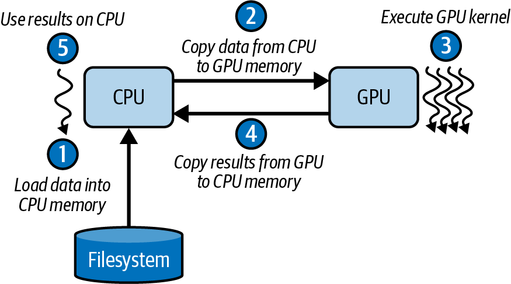
Figure 6-1. Simple CUDA programming flow
最初，主机（host）将数据加载到 CPU 内存中。然后它把数据从 CPU 复制到 GPU 内存。在用 GPU 内存中的数据调用 GPU 核函数（kernel）之后，CPU 再把结果从 GPU 内存复制回 CPU 内存。此时结果又回到 CPU 上，供进一步处理。
Initially, the host loads data into CPU memory. It then copies the data from the CPU to the GPU memory. After calling the GPU kernel with the data in GPU memory, the CPU copies the results back from GPU memory to CPU memory. Now the results live back on the CPU for further processing.
GPU 依靠大规模并行来隐藏诸如图 6-1 中描述的 CPU-GPU 数据传输之类的数据传输延迟。每个 GPU 由许多 SM 组成，它们大致类似于 CPU 核心，但为并行做了精简。在 Blackwell 上，每个 SM 最多可以跟踪 64 个 warp（32 线程一组）。
GPUs rely on massive parallelism to hide data-transfer latency such as the CPU-GPU data transfer described in Figure 6-1. Each GPU comprises many SMs, which are roughly analogous to CPU cores but streamlined for parallelism. Each SM can track up to 64 warps (32‐thread groups) on Blackwell.
每个 GPU 都包含许多 SM——类似于 CPU 核心，但为吞吐做了优化。在现代 GPU 上，每个 SM 最多可并发跟踪 64 个 warp（2,048 个线程）。Blackwell GPU 每个 SM 拥有 64K 个 32 位寄存器（共 256 KB），以及每个 SM 合计 256 KB 的 L1 缓存/共享内存。这块 SRAM 中最多可有 228 KB（227 KB 可用）被配置为每个 SM 由用户管理的共享内存。任何单个线程块最多可以请求 227 KB 的动态共享内存（228 KB 中有 1 KB 由 CUDA 保留）。这些都有助于 SM 支撑 GPU 高度的线程级并行。
Each GPU includes many SMs-similar to CPU cores but optimized for throughput. On modern GPUs, each SM tracks up to 64 warps (2,048 threads) concurrently. Blackwell GPUs feature 64K 32-bit registers per SM (256 KB total) and a combined 256 KB L1 cache/shared memory per SM. Up to 228 KB (227 KB usable) of that SRAM can be configured as user-managed shared memory per SM. Any single thread block can request up to 227 KB of dynamic shared memory (1 KB is of the 228 KB is reserved by CUDA). These help the SMs support the GPU's high amount of thread-level parallelism.
在一个 Blackwell SM 内部，多个 warp 调度器（warp scheduler）向可用流水线发射指令；四个独立的 warp 调度器允许每个周期最多有四个 warp 向可用流水线发射指令。此外，每个调度器都支持双发射（dual-issue），能够为每个 warp 发射两条独立指令（例如一条算术运算和一条内存操作）。注意，双发射必须来自同一个 warp——而不能跨 warp。
Within a Blackwell SM, multiple warp schedulers issue instructions to the available pipelines; four independent warp schedulers allow up to four warps to issue instructions to the available pipelines on every cycle. Furthermore, each scheduler supports dual-issue capable of issuing two independent instructions (e.g., one arithmetic and one memory operation) per warp. Note that the dual-issue must come from the same warp-and not across warps.
在最好的情况下，每个调度器在每个周期都能有一个 warp 并发发射一条指令，从而允许每个周期有四个 warp 并行执行。当利用指令混合时，这会进一步提升吞吐，如图 6-2 所示。
In the best case, one warp from each scheduler can issue an instruction concurrently each cycle, allowing four warps to execute in parallel per cycle. This further boosts throughput when instruction mixing is utilized, as shown in Figure 6-2.
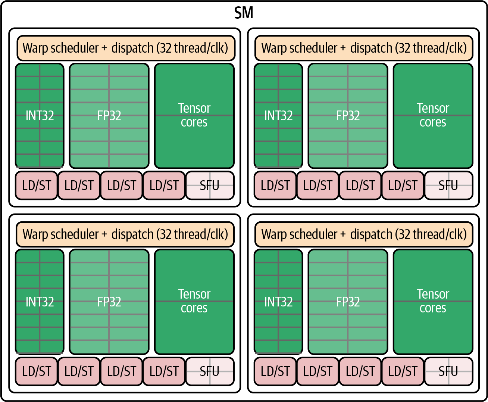
Figure 6-2. Blackwell SMs contain four independent warp schedulers, each capable of issuing one warp instruction per cycle with dual-issue of one math and one memory operation per scheduler
在这里，每个 SM 被细分为四个独立的调度分区——每个分区都有自己的 warp 调度器和分派逻辑。你可以把 SM 想象成共享片上资源的四个"迷你 SM"。这让硬件能够挑选就绪的 warp，并在每个时钟周期从多达四个不同的 warp 发射指令。
Here, each SM is subdivided into four independent scheduling partitions-each with its own warp scheduler and dispatch logic. You can think of the SM as four "mini-SMs" sharing on-chip resources. This lets the hardware pick ready warps and issue instructions from up to four different warps each clock cycle.
在这四个"迷你 SM"分区中的每一个内部，调度器每周期都能从同一个 warp 发射两条指令：一条算术指令（例如 INT32、FP32 或 Tensor Core）和一条内存指令（一次加载或存储）。这正是该调度器被称为双发射的原因。表 6-1 汇总了这些数字。
Within each of the four "mini-SM" partitions, the scheduler can issue two instructions per cycle from the same warp: one arithmetic instruction (e.g., INT32, FP32, or Tensor Core) and one memory instruction (a load or store). This is why the scheduler is called dual-issue. Table 6-1 summarizes these numbers.
表 6-1 关键 SM 调度器和指令发射限制（每时钟周期）
| 指标 | 数值 |
|---|---|
| 调度器数量 | 四个 |
| 最大发射 warp 数 | 四个（每个调度器一个） |
| 最大数学操作数 | 四个（每个调度器的算术发射一个） |
| 最大内存操作数 | 四个（每个调度器的加载/存储发射一个） |
Table 6-1. Key SM scheduler and instruction-issue limits (per clock cycle) | Metric | Value | |--------|-------| | Number of schedulers | Four | | Maximum warps issued | Four (one per scheduler) | | Maximum math operations | Four (one per scheduler's arithmetic issue) | | Maximum memory operations | Four (one per scheduler's load/store issue) |
注：所有指标表格中的数值均为示意性质，用于解释概念。关于不同 GPU 架构上的实际基准测试结果，请参见 GitHub 代码仓库。
Note: The numeric values in all metrics tables are illustrative to explain the concepts. For actual benchmark results on different GPU architectures, see the GitHub repository.
因此在最好的情况下，你可以在每个周期跨四个 warp 双发射四条算术指令和四条内存指令。这将同时最大化计算与内存吞吐。这些数字既源于 SM 的四路分区，也源于它能够为每个分区挑选一个 warp 并在每个周期发射两条正交指令的能力。
So in the best case you could dual-issue four math and four memory instructions across four warps every cycle. This would maximize both compute and memory throughput simultaneously. These numbers are a result of the SM's four-way partitioning-as well as its ability to pick one warp per partition and issue two orthogonal instructions each cycle.
特殊功能单元（Special Function Unit，SFU）与 INT32、FP32 和 Tensor Core 流水线并列存在。它们处理超越函数运算（例如正弦、余弦、倒数、平方根）。不过，它们并不属于双发射的算术与内存指令对。SFU 使用专用的 SFU 流水线，独立于主 INT32/FP32 和加载/存储（load/store，LD/ST）流水线运行。
The Special Function Unit (SFU) sits alongside the INT32, FP32, and Tensor Core pipelines. They handle transcendental operations (e.g., sine, cosine, reciprocal, square root). However, they are not part of the dual-issue math and memory pair. SFUs use a dedicated SFU pipeline that runs independently of the main INT32/FP32 and load/store (LD/ST) pipelines. Because SFUs occupy a separate pipeline and can execute in parallel when needed, the SM can continue issuing math and memory instructions without waiting for the slower functions to complete. This separation increases instruction‐level parallelism and overall throughput even further for mixed‐operation kernels. They keep complex math operations from stalling the core compute and memory pipelines.
因为有四个调度器——且每个调度器通常每周期能发射一条 warp 指令——所以当存在足够的独立工作和发射配对时，每个周期最多可有四个 warp 向前推进。例如，内存操作可以流经 SM 合计 16 条加载/存储（LD/ST）流水线（每个调度器四条 LD/ST 流水线）。这些流水线会向 L1/共享内存、L2 缓存或全局内存（在接下来的小节中讨论）读取或写入数据。
Because there are four schedulers-and each can typically issue one warp instruction per cycle-up to four warps can make forward progress each cycle when there is sufficient independent work and issue-pairing. For instance, the memory operations can flow through the SM's combined 16 load/store (LD/ST) pipelines (four LD/ST pipelines per scheduler). These will read or write data to L1/shared memory, L2 cache, or global memory (covered in an upcoming section).
确切的 LD/ST 流水线数量与配对并不保证如此。请依靠性能剖析计数器来判断你的核函数是受限于内存发射还是计算发射。并参阅 NVIDIA 文档以了解你所用架构的具体细节。Blackwell 调优指南是一个不错的起点。
Exact LD/ST pipeline counts and pairings are not guaranteed. Rely on profiling counters to determine whether your kernel is limited by memory issue or compute issue. And consult the NVIDIA documentation for specifics of your architecture. The Blackwell tuning guide is a good place to start.
简而言之，GPU 擅长数据并行工作负载，包括大型矩阵乘法、卷积以及其他同一条指令作用于许多元素的运算。开发者可以直接用 CUDA C++ 编写核函数，或间接通过 PyTorch 这样的高层框架，以及像 OpenAI Triton 这样基于 Python 的领域专用 GPU 语言来编写。
In short, GPUs excel at data-parallel workloads, including large matrix multiplies, convolutions, and other operations where the same instruction applies to many elements. Developers write kernels directly in CUDA C++ or indirectly through high-level frameworks like PyTorch and domain-specific, Python-based GPU languages like OpenAI's Triton.
在深入核函数开发和内存访问优化之前，我们先回顾一下支撑所有这些实践的 CUDA 线程层级和关键术语。
Before diving into kernel development and memory-access optimizations, let's review the CUDA thread hierarchy and key terminology that underpins all of these practices.
6.2 线程、warp、线程块和网格 (Threads, Warps, Blocks, and Grids)¶
CUDA 将并行工作组织成三级层级——线程、线程块（又称协作线程阵列〔cooperative thread array，CTA〕）和网格——以在可编程性与大规模吞吐之间取得平衡。在最底层，每个线程执行你的核函数代码。在现代 GPU 上，你把线程分组为最多各 1,024 个线程的线程块。当你启动核函数时，线程块组成一个网格，如图 6-3 所示。
CUDA structures parallel work into a three-level hierarchy-threads, thread blocks (aka cooperative thread arrays [CTAs]), and grids-to balance programmability with massive throughput. At the lowest level, each thread executes your kernel code. You group threads into thread blocks of up to 1,024 threads each on modern GPUs. Thread blocks form a grid when you launch your kernel, as shown in Figure 6-3.
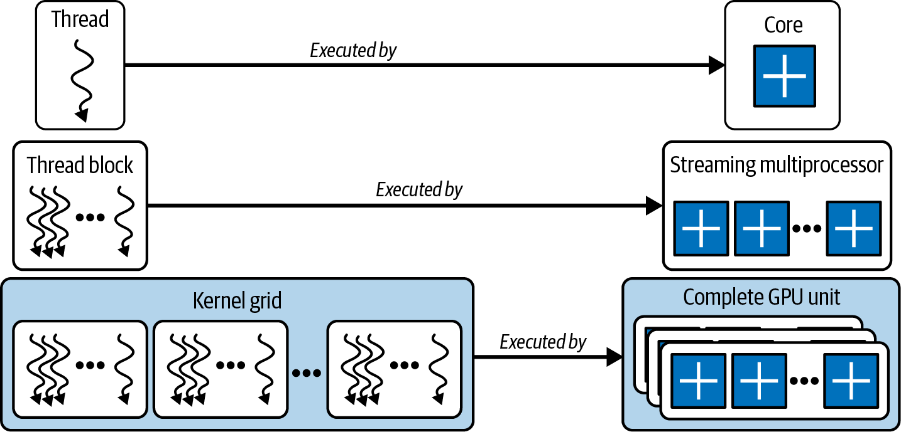
Figure 6-3. Threads, thread blocks (aka CTAs), and grids
通过合理设定网格大小，你可以在不改变核函数逻辑的情况下扩展到数百万个线程。CUDA 的运行时（以及 PyTorch 这样的框架）会处理跨所有 SM 的调度与分发。图 6-4 展示了线程层级的另一个视角，包括基于 CPU 的主机——它调用运行在 GPU 设备上的 CUDA 核函数。
By sizing your grid appropriately, you can scale to millions of threads without changing your kernel logic. CUDA's runtime (and frameworks like PyTorch) handle scheduling and distribution across all SMs. Figure 6-4 shows another view of the thread hierarchy, including the CPU-based host, which invokes a CUDA kernel running on the GPU device.
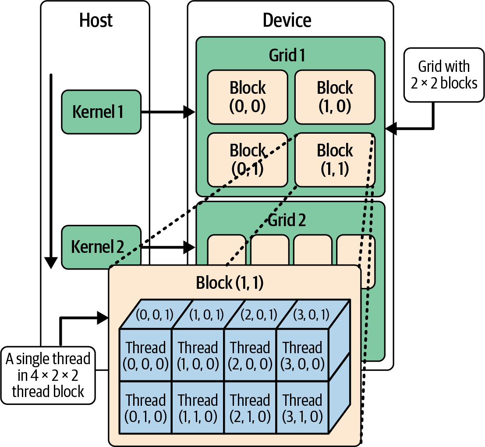
Figure 6-4. View of thread hierarchy, including the CPU-based host, which launches a kernel running on the GPU device
传统上，来自不同线程块的线程无法彼此直接协作。然而，现代 GPU 架构和 CUDA 版本支持线程块簇（thread block cluster）。线程块簇是一组能够跨 SM 相互通信的线程块。
Traditionally, threads from different thread blocks could not work with one another directly. However, modern GPU architectures and CUDA versions support thread block clusters. Threadblock clusters are groups of thread blocks that can communicate with one another across SMs.
具体来说，在一个线程块簇内，不同线程块中的线程可以访问彼此的共享内存，并使用硬件支持的、簇作用域的屏障（barrier）。这些能力允许进行更大规模的计算运算，包括矩阵乘法——它在当今庞大的 LLM 工作负载中非常常见。线程块簇在参与该簇的各个 SM 之间共享一个分布式共享内存（distributed shared memory，DSMEM）地址空间，如图 6-5 所示。
Specifically, within a thread block cluster, threads in different thread blocks can access one another's shared memory and use hardware-supported, cluster-scoped barriers. These allow for much larger compute operations, including matrix multiplies, which are very common in today's massive LLM workloads. Thread block clusters share a distributed shared-memory (DSMEM) address space between SMs that participate in the thread block cluster, as shown in Figure 6-5.
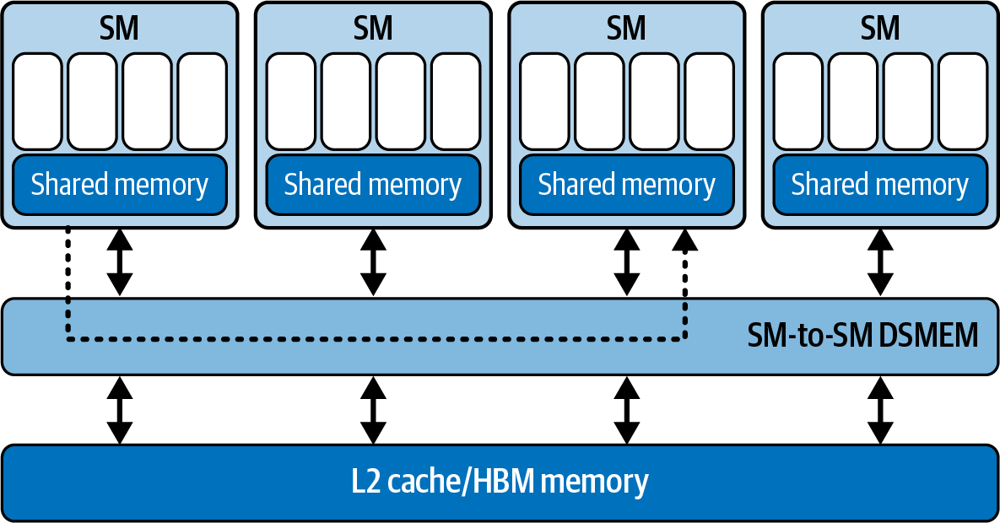
Figure 6-5. Hardware-supported DSMEM used in thread block clusters containing multiple thread blocks
DSMEM 是一项硬件特性，它通过快速的片上互连将一个线程块簇内所有 SM 的共享内存 bank 连接起来。借助 DSMEM，这些 SM 共享一个合并的多 SM 分布式共享内存池。这种统一让不同块中的线程能够以片上速度读取、写入并原子更新彼此的共享缓冲区——而且无需占用全局内存带宽。
DSMEM is a hardware feature that links the shared-memory banks of all SMs into a thread block cluster over a fast on-chip interconnect. With DSMEM, the SMs share a combined multi-SM distributed shared-memory pool. This unification allows threads in different blocks to read, write, and atomically update one another's shared buffers at on-chip speeds-and without using global memory bandwidth.
我们将在第 10 章介绍线程块集群和 DSMEM 等高级主题。这些是现代 GPU 处理的重要补充--对于 AI 系统性能工程师来说非常重要。在本章中，我们仍然专注于块内共享内存优化。
We'll cover advanced topics like thread block clusters and DSMEM in Chapter 10. These are an extremely important addition to modern GPU processing-and very important for an AI systems performance engineer to understand. For this chapter, our focus remains on intrablock shared-memory optimizations.
在每个线程块内部，线程使用低延迟的片上共享内存来共享数据，并用 __syncthreads() 进行同步。由于每次屏障都会带来开销，你应尽量减少同步点，如图 6-6 所示。
Within each thread block, threads share data using low-latency on-chip shared memory and synchronize with __syncthreads(). Because each barrier incurs overhead, you should minimize synchronization points, as shown in Figure 6-6.
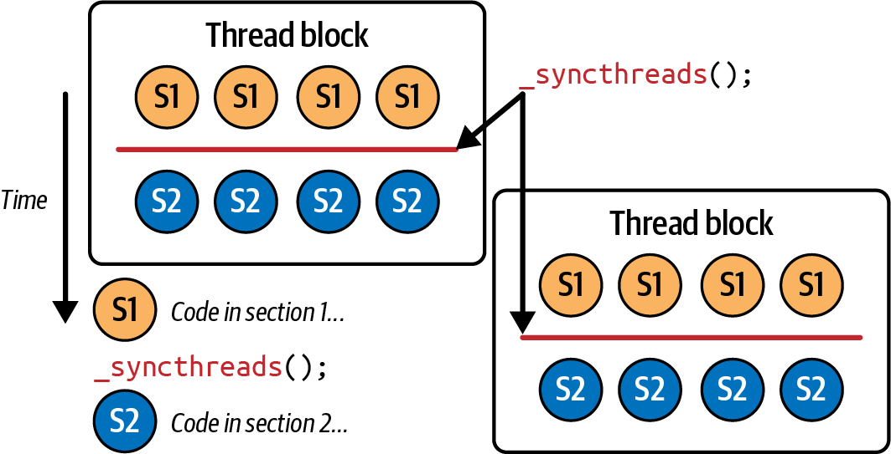
Figure 6-6. Synchronizing all threads within a thread block between two sections of code
目标是尽量减少同步点。不过，GPU 硬件会通过在多个 warp 之间快速切换，尝试隐藏诸如全局内存加载、缓存填充和流水线停顿等长延迟事件。
The goal is to minimize synchronization points. However, the GPU hardware will attempt to hide long-latency events such as global-memory loads, cache fills, and pipeline stalls by rapidly switching among warps. Thread blocks are subdivided into warps of 32 threads that execute in lockstep under the SIMT model using a warp scheduler. This is shown in Figure 6-7.
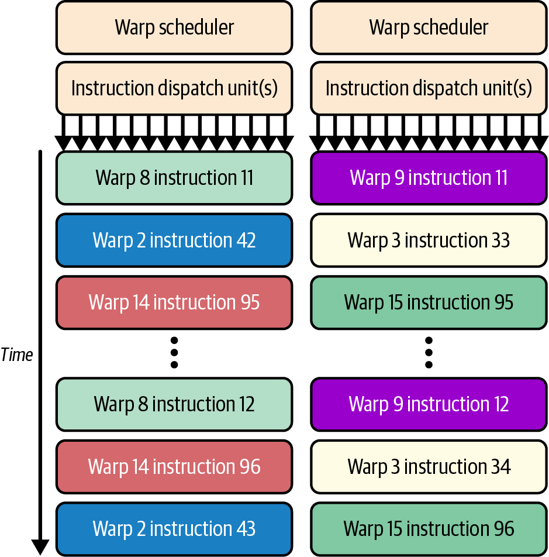
Figure 6-7. Warps (32 threads) advance as a whole with instructions managed by the warp scheduler
在 SM 上保持更多 warp 处于运行中，被称为高占用率。当你的 CUDA 代码能够实现高占用率时，就意味着当一个 warp 停顿时，另一个 warp 已准备好运行。这让 GPU 的计算单元保持忙碌。
Keeping more warps in flight is known as high occupancy on the SM. When your CUDA code allows high occupancy, it means that when one warp stalls, another is ready to run. This keeps the GPU's compute units busy.
然而，高占用率必须与每线程资源上限（如寄存器和共享内存）相权衡。将寄存器溢出（register spilling）到较慢的内存中会造成新的停顿。在剖析占用率的同时也剖析寄存器和共享内存的使用情况，有助于你选择既能最大化吞吐、又不会触发资源争用的块大小。
However, high occupancy must be balanced against per-thread resource limits, such as registers and shared memory. Spilling registers to slower memory can create new stalls. Profiling occupancy alongside register and shared-memory usage helps you choose a block size that maximizes throughput without triggering resource contention.
我们将在第 8 章介绍占用率调整，但这是理解 SM、warp、线程等上下文的关键概念。
We will cover occupancy tuning in Chapter 8, but it's a key concept to understand in the context of SMs, warps, threads, etc.
线程块相互独立执行，且没有保证的执行顺序。这让 GPU 调度器能够将它们分派到所有 SM 上，充分利用硬件并行。这种网格—块—warp 层级保证了你的 CUDA 核函数无需修改即可运行在拥有更多 SM 和线程的未来 GPU 架构上。
Thread blocks execute independently and in no guaranteed order. This allows the GPU scheduler to dispatch them across all SMs and fully exploit hardware parallelism. This grid-block-warp hierarchy guarantees that your CUDA kernels will run unmodified on future GPU architectures with more SMs and threads.
吞吐还取决于 warp 的执行效率。同一个 warp 中的线程必须遵循相同的控制流路径并执行合并访问（coalesced access）的内存访问。如果某些线程发生分歧，使一个分支走 if 路径而其他线程走 else 路径，那么该 warp 会串行化执行，逐一顺序处理每条分支路径。这被称为warp 分歧（warp divergence），如图 6-8 所示。
Throughput also hinges on warp execution efficiency. Threads in a warp must follow the same control-flow path and perform coalesced memory accesses. If some threads diverge such that one branch takes the if path and others take the else path, the warp serializes execution, processing each branch path sequentially. This is called warp divergence, and it's shown in Figure 6-8.
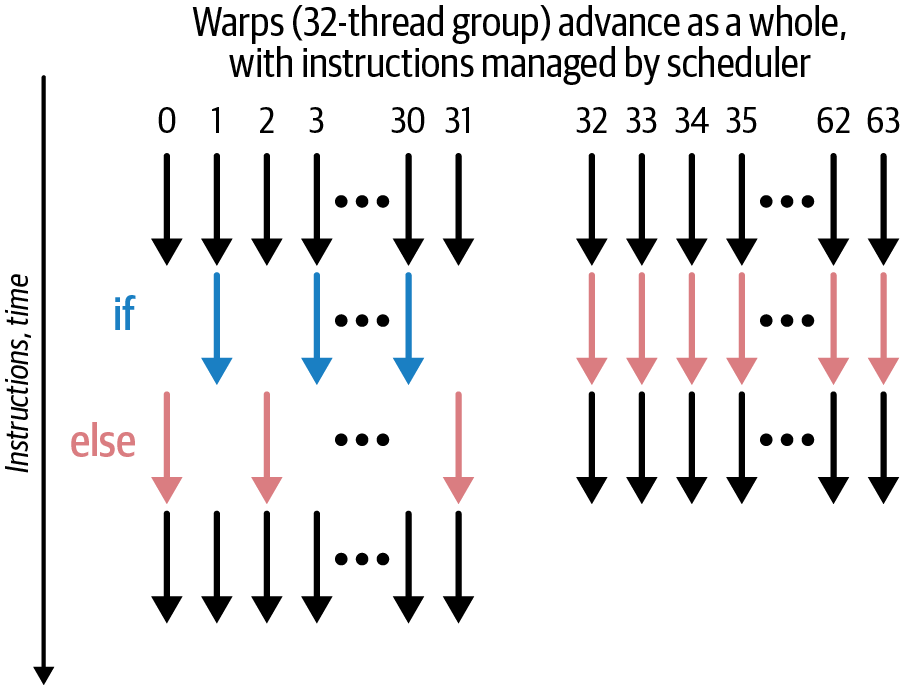
Figure 6-8. SIMT warp divergence (left) versus uniformity (right)
通过屏蔽非活跃的 lane 并运行额外的遍历来覆盖每条分支，warp 分歧会把整体执行时间乘以分支的数量。我们将在第 8 章更深入地探讨 warp 分歧——以及检测、剖析和缓解它的方法。
By masking inactive lanes and running extra passes to cover each branch, warp divergence multiplies the overall execution time by the number of branches. We'll dive deeper into warp divergence in Chapter 8-as well as ways to detect, profile, and mitigate it.
分歧只对单个 warp 内部的线程构成问题。不同的 warp 可以走不同的分支，而不会有性能损失。
Divergence is an issue only for threads within a single warp. Different warps can follow different branches with no performance penalty.
6.3 选择每块线程数和每网格块数 (Choosing Threads-per-Block and Blocks-per-Grid Sizes)¶
GPU 性能的一个关键方面是选择一个与硬件 32 线程 warp 大小对齐的线程块大小。因此，你通常会挑选恰好是 32 的整数倍的线程块大小。例如，一个 256 线程的块（8 个 warp = 256 ÷ 32）能完全占满每个 warp，而一个 33 线程的块则需要两个 warp 槽，且只用到第二个 warp 中 1/32 的 lane。这会浪费并行机会，因为无论一个 warp 是在活跃运行 32 个线程还是仅 1 个线程，它都会占用一个调度器槽。
A critical aspect of GPU performance is choosing a thread block size that aligns with the hardware's 32-thread warp size. As such, you typically pick thread block sizes that are exact multiples of 32. For example, a 256-thread block (8 warps = 256 / 32) fully occupies each warp, whereas a 33-thread block will require two warp slots and use only 1/32 of the second warp's lanes. This wastes parallelism opportunities since every warp occupies a scheduler slot whether it's actively running 32 threads or just 1 thread.
此外，不同的 GPU 世代有不同的硬件上限，包括每个 SM 的最大线程数和每个 SM 的寄存器数量。如果我们想保持良好性能，这自然会限制块的大小。例如，块太大可能需要太多寄存器，从而导致寄存器溢出并降低核函数的性能。
Additionally, different GPU generations have different hardware limits, including maximum threads per SM and the number of registers per SM. This naturally limits the size of our blocks if we want to maintain good performance. For instance, too large a block might require too many registers, which will cause register spilling and decrease the kernel's performance.
大块也可能需要太多共享内存，而共享内存在 GPU 硬件中是有限的。具体来说，Blackwell 每个 SM 仅提供 228 KB（227 KB 可用）的共享内存，供运行在该 SM 上的所有驻留线程块寻址。
A large block might also require too much shared memory, which is finite in GPU hardware. Specifically, Blackwell provides only 228 KB (227 KB usable) per SM of shared memory addressable by all resident thread blocks running on the SM.
这些硬件上限会影响一个 SM 上同时能激活多少个块/warp。这正是我们前面介绍过的占用率的度量。如果较小的块能让更多并发 warp 在 SM 上同时运行，它们可能带来更高的占用率。
These hardware limits affect how many blocks/warps can be active on an SM at once. This is a measurement of occupancy, as we introduced earlier. Smaller blocks might enable higher occupancy if they allow more concurrent warps to run concurrently on the SM.
理解你所用 GPU 世代的相对规模和硬件线程上限很重要，包括线程、线程块、warp 和 SM 的数量。图 6-9 展示了这些资源的相对规模，包括它们的上限。
It's important to understand the relevant scale and hardware thread limits for your GPU generation, including the number of threads, thread blocks, warps, and SMs. Figure 6-9 shows the relative scale of these resources, including their limits.
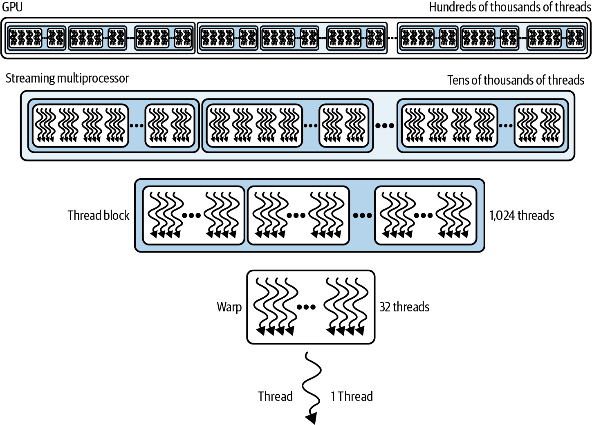
Figure 6-9. Relative scale and hardware limits for threads on a Blackwell GPU
表 6-2 汇总了 Blackwell B200 GPU 的这些上限。其余上限可在 NVIDIA 网站上查到。（其他 GPU 世代会有不同的上限，因此务必核对你系统的确切规格。）
Table 6-2 summarizes these GPU limits for the Blackwell B200 GPU. The rest of the limits are available on NVIDIA's website. (Other GPU generations will have different limits, so be sure to check the exact specifications for your system.)
表 6-2 线程级和块级限制（Blackwell B200）
| 资源 | 硬件限制 | 说明 |
|---|---|---|
| warp 大小 | 32 个线程 | 基本 SIMT 执行单元是 32 个线程（一个 warp）。始终使用 32 的倍数以避免浪费。 |
| 每个线程块的最大线程数 | 1,024 个线程 | blockDim.x * blockDim.y * blockDim.z ≤ 1024。 |
| 每个线程块的最大 warp 数 | 32 个 warp | (1,024 个线程 / 32 个线程每 warp) = 每个块最多 32 个 warp。 |
Table 6-2. Thread-level and block-level limits (Blackwell B200) | Resource | Hardware limit | Notes | |----------|----------------|-------| | Warp size | 32 threads | The fundamental SIMT execution unit is 32 threads (a warp). Always use a multiple of 32 to avoid waste. | | Maximum threads per thread block | 1,024 threads | blockDim.x * blockDim.y * blockDim.z ≤ 1024. | | Maximum warps per thread block | 32 warps | (1,024 threads / 32 threads-per-warp) = 32 warps max per block. |
我们已经讨论了 32 个线程的 warp 大小限制，这鼓励我们选择 32 线程倍数的块维度来创建"完整 warp"并避免未充分利用的 warp。请注意，每个块最多可以有 1,024 个线程，相应地，一个块最多只能包含 32 个 warp。这些限制会影响您的占用率，因为一旦调度了一个块，每个 SM 可以同时容纳有限数量的 warp 和块。
We've discussed the 32-thread warp size limit, which encourages us to pick block dimensions in multiples of 32 threads to create "full warps" and avoid underutilized warps. Note that each block can have at most 1,024 threads, and correspondingly, a block can contain at most 32 warps. These limits affect your occupancy since each SM can hold a finite number of warps and blocks at once once a block is scheduled.
此外，不同的 GPU 代还有每 SM 限制，或通常称为 SM 驻留限制。这些 Blackwell SM 驻留限制总结在表 6-3 中。
Additionally, different GPU generations also have per-SM limits, or commonly called SM-residency limits. These Blackwell SM-residency limits are summarized in Table 6-3.
表 6-3 SM 驻留资源限制（Blackwell B200）
| 资源（每 SM） | 硬件限制 | 说明 |
|---|---|---|
| 每 SM 最大驻留 warp 数 | 64 个 warp | 硬件可以保持最多 64 个 warp 在运行（64 x 32 个线程 = 2,048 个线程）。注意：此限制已保持多代，对 Blackwell 仍然成立。 |
| 每 SM 最大驻留线程数 | 2,048 个线程 | 等于 64 个 warp x 32 个线程/warp。如果每个块使用 1,024 个线程，则最多 2 个这样的块（64 个 warp）可以同时驻留在一个 SM 上。使用较小的块（例如 256 个线程）允许更多块驻留在 SM 上（最多 8 个块 x 256 = 2,048 个线程），这可以增加占用率并帮助隐藏延迟--尽管太多的小块可能增加调度开销。 |
| 每 SM 最大活动块数 | 32 个块 | 最多 32 个线程块可以同时驻留在一个 SM 上（如果块较小，更多块可以适应此限制）。 |
Table 6-3. SM-resident resource limits (Blackwell B200) | Resource (per SM) | Hardware limit | Notes | |-------------------|----------------|-------| | Maximum resident warps per SM | 64 warps | Hardware can keep up to 64 warps in flight (64 x 32 threads = 2,048 threads). Note: This limit has held for many generations and remains true for Blackwell. | | Maximum resident threads per SM | 2,048 threads | Equals 64 warps x 32 threads/warp. If each block uses 1,024 threads, then at most 2 such blocks (64 warps) can reside on one SM concurrently. Using smaller blocks (e.g., 256 threads) allows more blocks to reside on the SM (up to 8 blocks x 256 = 2,048 threads), which can increase occupancy and help hide latency-though too many tiny blocks can add scheduling overhead. | | Maximum active blocks per SM | 32 blocks | At most, 32 thread blocks can be simultaneously resident on one SM (if blocks are smaller, more can fit up to this limit). |
在这里，我们看到 Blackwell 上每 SM 的最大并发 warp 数为 64。这在近几代 GPU 中没有变化，因此占用率方面的考量得以延续。一个 SM 上的最大活跃块数为 32，相应地，每 SM 的最大驻留线程数为 2,048 线程。CUDA 网格也有最大维度，如表 6-4 所示。
Here, we see that the maximum concurrent warps per SM on Blackwell is 64. This has not changed in recent GPU generations, so occupancy considerations carry over. The maximum active blocks per SM is 32, and correspondingly, the maximum resident threads per SM is 2,048 threads. CUDA grids also have maximum dimensions, as shown in Table 6-4.
表 6-4 CUDA 网格限制
| 网格维度 | 限制 | 说明 |
|---|---|---|
| X、Y 或 Z 中的最大块数 | X: 2,147,483,647 个块 Y: 65,535 个块 Z: 65,535 个块 |
3D 网格可以大到 2,147,483,647 x 65,535 x 65,535 个块。 |
| 最大并发网格（核函数） | 128 个网格 | 最多 128 个核函数可以在一个设备上并发执行（即一次驻留 128 个网格）。 |
Table 6-4. CUDA grid limits | Grid dimension | Limit | Notes | |----------------|-------|-------| | Maximum blocks in X, Y, or Z | X: 2,147,483,647 blocks
Y: 65,535 blocks
Z: 65,535 blocks | A 3D grid can be as large as 2,147,483,647 x 65,535 x 65,535 blocks. | | Maximum concurrent grids (kernels) | 128 grids | Up to 128 kernels can execute concurrently on one device (i.e., 128 grids resident at once). |
虽然了解理论网格限制很好，但您通常会受到前面显示的线程/块/每 SM 限制的约束。如果您确实需要在一个维度中超过 65,535 个块，您可以启动 2D 或 3D 网格将工作分配到多个核函数启动（多启动）。我们在后面的章节中展示了一个示例。在实践中，在达到其他资源限制之前，很少会达到网格大小限制。
While it's good to know the theoretical grid limits, you'll typically be constrained by the thread/block/per-SM limits shown earlier. If you do need to exceed 65,535 blocks in one dimension, you can launch 2D or 3D grids to spread the work over multiple kernel launches (multi-kernel launches). We show an example in a later chapter. In practice, you'll rarely hit grid-size limits before hitting other resource limits.
6.3.1 CUDA GPU 向后和向前兼容模型 (CUDA GPU Backward and Forward Compatibility Model)¶
CUDA 的核心优势之一是其向前和向后兼容模型。今天编译的核函数通常可以在未来的 GPU 代上无需修改运行--只要您在二进制文件中包含 PTX 以实现向前兼容。如果您仅为单个架构发布 SASS（例如 Hopper 的 sm90 或 Blackwell 的 sm100）而没有 PTX，该二进制文件将无法在更新的架构上向前运行。特定于系列的目标如 sm100f 或 compute100f 将可移植性限制在同一特性系列的设备。最好发布包含通用 cubin/PTX 和所需的特定系列 cubin（例如优化等）的 fatbin。
One of CUDA's key strengths is its forward and backward compatibility model. Kernels compiled today can often run unmodified on future GPU generations-as long as you include PTX in your binary for forward compatibility. If you ship SASS only for a single architecture (e.g., sm90 for Hopper or sm100 for Blackwell) without PTX, that binary will not run forward on newer architectures. Family-specific targets like sm100f or compute100f limit portability to devices within the same feature family. It's best to ship a fatbin that includes generic cubin/PTX and any specific family cubins you need (e.g., for optimizations, etc.).
您可以通过在加载时设置 CUDAFORCEPTX_JIT=1 来强制 PTX JIT 编译来验证兼容性，以 JIT 编译 PTX 并缓存结果。如果您的二进制文件缺少 PTX，核函数启动将失败。这迫使您使用 PTX 支持重新构建。此兼容模型是大型 CUDA 生态系统的基础。它允许您从单个代码库同时针对传统和尖端硬件。
You can verify compatibility by setting CUDAFORCEPTX_JIT=1 at load time to force PTX JIT compilation to JIT-compile the PTX and cache the result. If your binary lacks PTX, kernel launches will fail. This forces you to rebuild with PTX support. This compatibility model underpins the large CUDA ecosystem. It allows you to target both legacy and cutting-edge hardware from a single codebase.
若要在当前与未来 GPU 世代之间真正保持向后与向前兼容，你应当使用通用目标进行编译——或显式包含 PTX。当你需要来自较新硬件特性的特定优化时，可以使用世代特定的目标。这样做时，务必为其他架构提供回退路径。
To truly maintain both backward and forward compatibility across current and future GPU generations, you should compile with generic targets-or explicitly include the PTX. When you need specific optimizations from newer hardware features, you can use generation-specific targets. When doing this, be sure to provide fallback paths for other architectures.
6.4 CUDA 编程回顾 (CUDA Programming Refresher)¶
在 CUDA C++ 中，你通过编写核函数来定义并行工作。这些是用 global 注解的特殊函数，运行在 GPU 设备上。当你从 CPU（主机）代码调用一个核函数时，你使用 <<< >>>（"chevron"/三尖括号）语法来指定应运行多少个线程——以及它们如何组织——需要两个配置参数：blocksPerGrid 表示线程块的数量，threadsPerBlock 表示每个块内的线程数量。
In CUDA C++, you define parallel work by writing kernels. These are special functions annotated with global that execute on the GPU device. When you call a kernel from CPU (host) code, you use the <<< >>> "triple-chevron" syntax to specify how many threads should run-and how they're organized-using two configuration parameters: blocksPerGrid for the number of thread blocks and threadsPerBlock for the number of threads within each block.
以下是一个简单示例，演示了 CUDA 核函数和核函数启动的关键组件。此核函数只是将输入数组中的每个元素原地加倍，因此不会创建额外内存--只有输入数组。在幕后，CUDA 将__global__函数编译成 GPU 设备代码，可以由数千或数百万个轻量级线程并行执行：
Here's a simple example that demonstrates the key components of a CUDA kernel and kernel launch. This kernel simply doubles each element in an input array in-place, so no extra memory is created-only the input array. Under the hood, CUDA compiles the global function into GPU device code that can be executed in parallel by thousands or millions of lightweight threads:
//-------------------------------------------------------
// Kernel: myKernel running on the device (GPU)
// - input : device pointer to float array of length N
// - N : total number of elements in the input
//-------------------------------------------------------
__global__ void myKernel(float* input, int N) {
// Compute a unique global thread index
int idx = blockIdx.x * blockDim.x + threadIdx.x;
// Only process valid elements
if (idx < N) {
input[idx] *= 2.0f;
}
}
// This code runs on the host (CPU)
int main() {
// 1) Problem size: one million floats
const int N = 1'000'000;
float *h_input = nullptr;
float *d_input = nullptr;
// 1) Allocate input float array of size N on host
cudaMallocHost(&h_input, N * sizeof(float));
// 2) Initialize host data (for example, all ones)
for (int i = 0; i < N; ++i) {
h_input[i] = 1.0f;
}
// 3) Allocate device memory for input on the device
cudaMalloc(&d_input, N * sizeof(float));
// 4) Copy data from the host to the device
cudaMemcpy(d_input, h_input, N * sizeof(float),
cudaMemcpyHostToDevice);
// 5) Choose kernel launch parameters
// Number of threads per block (multiple of 32)
const int threadsPerBlock = 256;
// Number of blocks per grid (3,907 for N = 1000000)
const int blocksPerGrid = (N + threadsPerBlock - 1) /
threadsPerBlock;
// 6) Launch myKernel across blocksPerGrid blocks
// Each block has threadsPerBlock number of threads
// Pass a reference to the d_input device array
myKernel<<<blocksPerGrid, threadsPerBlock>>>(d_input,
N);
// 7) Wait for the kernel to finish running on device
cudaDeviceSynchronize();
// 8) When finished, copy the results
// (stored in d_input) from the device back to
// host (stored in h_input)
cudaMemcpy(h_input, d_input, N * sizeof(float),
cudaMemcpyDeviceToHost);
// Cleanup: Free memory on the device and host
cudaFree(d_input);
cudaFreeHost(h_input);
// return 0 for success!
return 0;
}
这段代码尚未完全优化。我们会在本书后续过程中不断优化性能。但它给了你一个简单、完整的模板，可用于开始构建你自己的 CUDA 核函数。
This code is not fully optimized. We will optimize performance as we continue through the book. But this gives you a simple, complete template to start building your own CUDA kernels.
在这里，我们传递核函数输入参数d_input和N，它们可以在核函数函数内部访问以进行处理。处理是在许多线程之间并行共享的。这是设计使然。
Here, we pass the kernel input arguments d_input and N, which can be accessed inside the kernel function for processing. The processing is shared in parallel across many threads. This is by design.
完整的数据流程如下：
1. 在主机上分配内存（h_input）。
2. 使用cudaMemcpy和cudaMemcpyHostToDevice将数据从主机（h_input）复制到设备（d_input）。
3. 在设备上使用d_input运行核函数。
4. 同步以确保核函数已在设备上完成执行。
5. 使用cudaMemcpy和cudaMemcpyDeviceToHost将结果（d_input）从设备传输到主机（h_input）。
6. 使用cudaFree和cudaFreeHost清理设备和主机上的内存。
The complete data flow is as follows: 1. Allocate memory on the host (hinput). 2. Copy data from the host (hinput) to the device (dinput) using cudaMemcpy with cudaMemcpyHostToDevice. 3. Run the kernel on the device with dinput. 4. Synchronize to ensure the kernel has finished executing on the device. 5. Transfer the results (dinput) from the device to the host (hinput) using cudaMemcpy with cudaMemcpyDeviceToHost. 6. Clean up memory on both the device and host using cudaFree and cudaFreeHost.
你可以在启动时用 <<< >>> 向核函数传入额外的、高级的、CUDA 特有的参数，包括共享内存大小（以及许多其他参数），但两个核心启动参数 blocksPerGrid 和 threadsPerBlock 是任何 CUDA 核函数调用的基础。在下一节中，我们将讨论如何最好地选择这些启动参数的取值。
You can pass additional, advanced, CUDA-specific parameters to your kernel at launch time with <<< >>>, including shared-memory size (and many others), but the two core launch parameters, blocksPerGrid and threadsPerBlock, are the foundation of any CUDA kernel invocation.
在下一节中，我们将讨论如何最好地选择这些启动参数值。
In the next section, we'll discuss how to best choose these launch parameter values.
你可能会疑惑，为什么我们必须传入输入数组的大小 N。这看起来是多余的，因为核函数应该能够检查数组的大小。然而，这正是 GPU CUDA 核函数与典型 CPU 函数之间的核心区别：CUDA 核函数被设计为运行在单个线程内部，与其他数千个线程一起，处理输入数据的一个分区。因此，N 定义了这个特定核函数将要处理的分区大小。
You might wonder why we have to pass N, the size of the input array. This might seem redundant since the kernel should be able to check the size of the array. However, this is a core distinction between GPU CUDA kernel functions and typical CPU functions: CUDA kernel functions are designed to work within a single thread, alongside thousands of other threads, processing a partition of the input data. As such, N defines the size of the partition that this particular kernel will process.
结合内置的核函数变量blockDim（在本例中为 1，因为我们传递的是一维输入数组）、blockIdx和threadIdx，核函数计算输入数组中的特定idx。
Combined with the built-in kernel variables blockDim (in this case, 1, since we're passing a one-dimensional input array), blockIdx, and threadIdx, the kernel computes a specific idx into the input array.
这个唯一的idx让核函数干净且唯一地处理输入数组的每个元素，并行地，在跨许多不同 SM 同时运行的许多线程中。
This unique idx lets the kernel cleanly and uniquely process each element of the input array, in parallel, across many threads running simultaneously across many different SMs.
注意边界检查if (idx < N)。这是避免越界访问（边界检查）所必需的，因为N可能不是块大小的精确倍数。例如，考虑输入数组大小为 63 的场景，所以N = 63。warp 调度器可能会分配两个 warp（每个 32 个线程）来处理输入数组中的 63 个元素。
Note the boundary check if (idx < N). This is necessary to avoid out-of-bounds access (bounds checking) because N might not be an exact multiple of the block size. For example, consider the scenario where the input array size is 63, so N = 63. The warp scheduler might assign two warps (each with 32 threads) to process the 63 elements in the input array.
第一个 warp 将同时运行 32 个核函数实例来处理元素 0-31，永远不会超过N = 63。这很直接。与第一个 warp 并行运行的第二个 warp 将期望处理元素 32-64。但是，它将在达到N = 63时停止。
The first warp will run 32 kernel instances simultaneously to process elements 0-31, never exceeding N = 63. This is straightforward. The second warp, running in parallel with the first warp, will expect to process elements 32-64. However, it will stop when it reaches N = 63.
如果没有if (idx < N)边界检查，第二个 warp 将尝试处理idx = 64，它将抛出非法内存访问错误（例如cudaErrorIllegalAddress）。边界检查确保每个线程要么处理有效的输入元素，要么在其idx超出范围时立即退出。
Without the if (idx < N) boundary check, the second warp would attempt to process idx = 64, which would throw an illegal memory access error (e.g., cudaErrorIllegalAddress). The boundary check ensures that each thread either processes a valid input element or exits immediately if its idx is out of range.
CUDA 核函数在设备上异步执行，且没有每线程的异常机制；相反，任何非法操作（越界访问、未对齐访问等）都会为整个启动设置一个全局故障标志。主机驱动只有在你下一次调用同步或另一个 CUDA API 函数时才检查该标志，因此错误是延迟浮现的（例如以 cudaErrorIllegalAddress 或一个通用的启动失败的形式）。
CUDA kernels execute asynchronously on the device with no per-thread exceptions; instead, any illegal operation (out-of-bounds access, misaligned access, etc.) sets a global failure flag for the entire launch. The host driver checks that flag only when you next call synchronization or another CUDA API function, so errors appear delayed (e.g., as a cudaErrorIllegalAddress or generic launch failure).
这种设计让 GPU 的流水线和互连保持充分占用，但要求你在主机上显式同步并轮询错误——通常在核函数启动之后立即调用 cudaGetLastError() 和 cudaDeviceSynchronize()。这样，你就能在故障一发生时就将其捕获。
This design keeps the GPU's pipelines and interconnects fully occupied, but it requires you to explicitly synchronize and poll for errors on the host-typically using cudaGetLastError() and cudaDeviceSynchronize() immediately after kernel launch. This way, you can catch failures as soon as possible.
您会在很多 CUDA 核函数中看到边界检查。如果您没看到它，您应该理解为什么它不在那里。它可能以某种形式存在--或者 CUDA 核函数开发人员可以以某种方式保证非法内存访问错误永远不会发生。
You will see boundary checks in many CUDA kernels. If you don't see it, you should understand why it's not there. It may exist in some form-or the CUDA kernel developer can guarantee in some way that illegal memory access errors will never occur.
最后，我们来看实际的核函数逻辑。在计算其到输入数组的唯一索引idx后，此核函数（在跨许多 SM 的数千个线程中并行运行）将输入数组中索引idx处的值乘以 2。然后它原地更新输入数组中的值。
Finally, we come to the actual kernel logic. After computing its unique index idx into the input array, this kernel (running in parallel across thousands of threads across many SMs) multiplies the value at index idx in the input array by 2. It then updates the value in the input array in-place.
在这个特定核函数中，除了类型为int的临时idx变量外，不需要额外内存。
In this particular kernel, no additional memory is required beyond the temporary idx variable of type int.
以下是相同核函数的另一种实现，展示了更简洁的代码结构：
Here is another implementation of the same kernel, demonstrating a more concise code structure:
//-------------------------------------------------------
// Kernel: myKernel running on the device (GPU)
// - input : device pointer to float array of length N
// - N : total number of elements in the input
//-------------------------------------------------------
__global__ void myKernel(float* input, int N) {
// Compute a unique global thread index
int idx = blockIdx.x * blockDim.x + threadIdx.x;
// Only process valid elements
if (idx < N) {
input[idx] *= 2.0f;
}
}
// This code runs on the host (CPU)
int main() {
// 1) Problem size: one million floats
const int N = 1'000'000;
float* h_input = nullptr;
cudaMallocHost(&h_input, N * sizeof(float));
// Initialize host data (for example, all ones)
for (int i = 0; i < N; ++i) {
h_input[i] = 1.0f;
}
// Allocate device memory for input on the device (d_)
float* d_input = nullptr;
cudaMalloc(&d_input, N * sizeof(float));
// Copy data from the host to the device using
// cudaMemcpyHostToDevice
cudaMemcpy(d_input, h_input, N * sizeof(float),
cudaMemcpyHostToDevice);
// 2) Tune launch parameters
const int threadsPerBlock = 256; // multiple of 32
const int blocksPerGrid = (N + threadsPerBlock - 1) /
threadsPerBlock; // 3,907, in this case
// Launch myKernel across blocksPerGrid number of blocks
// Each block has threadsPerBlock number of threads
// Pass a reference to the d_input device array
myKernel<<<blocksPerGrid, threadsPerBlock>>>(d_input, N);
// Wait for the kernel to finish running on the device
cudaDeviceSynchronize();
// When finished, copy results (stored in d_input) from
// device to host
// (stored in h_input) using cudaMemcpyDeviceToHost
cudaMemcpy(h_input, d_input, N * sizeof(float),
cudaMemcpyDeviceToHost);
// Cleanup: Free memory on the device and host
cudaFree(d_input);
cudaFreeHost(h_input);
return 0; // return 0 for success!
}
6.5 配置启动参数：每网格块数和每块线程数 (Configuring Launch Parameters: Blocks per Grid and Threads per Block)¶
如前所述，使用 warp 大小（32）倍数的块大小至关重要。threadsPerBlock大小为 256（8 个 warp）是一个常见的起点，可以平衡占用率和资源使用。这将帮助我们在核函数执行期间避免部分填充的 warp，隐藏延迟，并平衡 SM 和其他硬件资源：
As mentioned earlier, using block sizes that are multiples of the warp size (32) is crucial. A threadsPerBlock size of 256 (8 warps) is a common starting point that balances occupancy and resource usage. This will help us avoid partially filled warps during kernel execution, hide latency, and balance SMs and other hardware resources:
选择一个是 32 线程整数倍的块大小，有助于避免空的 warp 槽。否则，那些填充不满的 warp 会占用稀缺的调度器资源——却不贡献有用的工作。
- Multiples of 32 threads: Choosing block sizes that are multiples of 32 threads helps avoid empty warp slots. Otherwise, those underfilled warps occupy scarce scheduler resources-without contributing useful work.
- 延迟隐藏：每个 SM 需要数百个线程来隐藏 DRAM 和指令延迟停顿。如果您在一个容量为 2,048 个线程的 SM 上启动 8 个 256 线程的块，您可以使流水线保持忙碌而不会过度订阅。
- Latency hiding: Each SM needs hundreds of threads to hide DRAM and instruction latency stalls. If you launch eight 256-thread blocks on an SM with a capacity of 2,048 threads, you can keep the pipeline busy without oversubscribing.
- 占用率：例如，使用
threadsPerBlock = 256，每个块只需要 8 个 warp。这往往能提供良好的占用率，而不会耗尽每个块的寄存器或共享内存。对于像 Blackwell 这样的现代 GPU，考虑每块 256-512 个线程，以在尊重寄存器和共享内存限制的同时最大化占用率。
- Occupancy: For example, with threadsPerBlock = 256, each block requires only 8 warps. This tends to provide good occupancy without exhausting per-block registers or shared memory.For modern GPUs like Blackwell, consider 256-512 threads per block to maximize occupancy while respecting register and shared-memory limits.
256 足够小，你很少会超过每块 1,024 线程的上限。它又足够大，以至于当其他 warp 中的线程停顿时，你不会让太多 warp 空闲。
- Resource balance: 256 is small enough that you'll rarely exceed the 1,024-thread-per-block limit. It's also large enough that you won't leave too many warps idle while threads in other warps are stalled.
从 threadsPerBlock=256 开始，你可以根据核函数的寄存器和共享内存需求——以及占用率特征——向上或向下调整（128、512 等）。
Starting with threadsPerBlock = 256, you can adjust up or down (128, 512, etc.) based on your kernel's register and shared-memory requirements and occupancy characteristics.
对于blocksPerGrid，您可以基于N个输入元素和threadsPerBlock的值来确定。例如，blocksPerGrid通常设置为(N + threadsPerBlock - 1) / threadsPerBlock来向上取整，以便在N不是threadsPerBlock的精确倍数时覆盖所有元素。这是一个常见的选择，保证每个输入元素都由一个线程覆盖。以下是显示计算的代码：
For blocksPerGrid, you can determine it based on N input elements and the value of threadsPerBlock. For example, blocksPerGrid is typically set to (N + threadsPerBlock - 1) / threadsPerBlock to round up and cover all elements when N is not an exact multiple of threadsPerBlock. This is a common choice that guarantees every input element is covered by a thread. The following code shows the calculation:
//-------------------------------------------------------
// Kernel: myKernel running on the device (GPU)
// - input : device pointer to float array of length N
// - N : total number of elements in the input
//-------------------------------------------------------
__global__ void myKernel(float* input, int N) {
// Compute a unique global thread index
int idx = blockIdx.x * blockDim.x + threadIdx.x;
// Only process valid elements
if (idx < N) {
input[idx] *= 2.0f;
}
}
// This code runs on the host (CPU)
int main() {
// 1) Problem size: one million floats
const int N = 1'000'000;
float* h_input = nullptr;
cudaMallocHost(&h_input, N * sizeof(float));
// Initialize host data (for example, all ones)
for (int i = 0; i < N; ++i) {
h_input[i] = 1.0f;
}
// Allocate device memory for input on the device (d_)
float* d_input = nullptr;
cudaMalloc(&d_input, N * sizeof(float));
// Copy data from the host to the device using
// cudaMemcpyHostToDevice
cudaMemcpy(d_input, h_input, N * sizeof(float),
cudaMemcpyHostToDevice);
// 2) Tune launch parameters
const int threadsPerBlock = 256; // multiple of 32
const int blocksPerGrid = (N + threadsPerBlock - 1) /
threadsPerBlock; // 3,907, in this case
// Launch myKernel across blocksPerGrid number of blocks
// Each block has threadsPerBlock number of threads
// Pass a reference to the d_input device array
myKernel<<<blocksPerGrid, threadsPerBlock>>>(d_input, N);
// Wait for the kernel to finish running on the device
cudaDeviceSynchronize();
// When finished, copy results (stored in d_input) from
// device to host
// (stored in h_input) using cudaMemcpyDeviceToHost
cudaMemcpy(h_input, d_input, N * sizeof(float),
cudaMemcpyDeviceToHost);
// Cleanup: Free memory on the device and host
cudaFree(d_input);
cudaFreeHost(h_input);
return 0; // return 0 for success!
}
这与之前的核函数相同，但根据N的大小动态计算blocksPerGrid和threadsPerBlock。注意熟悉的if (idx < N)边界检查。这确保最后一个块中任何落在N之外的"额外"线程将什么都不做--而不会导致非法内存地址错误。接下来，让我们探讨多维输入，如 2D 图像和 3D 体积。
This is the same kernel as before, but with blocksPerGrid and threadsPerBlock computed dynamically based on the size of N. Note the familiar if (idx < N) boundary check. This ensures that any "extra" threads in the last block that fall outside N will do nothing-without causing an illegal memory address error. Next, let's explore multidimensional inputs, such as 2D images and 3D volumes.
6.6 2D 和 3D 核函数输入 (2D and 3D Kernel Inputs)¶
当您的输入数据自然存在于二维中（例如图像）时，您可以启动 2D 块的 2D 网格。例如，以下核函数使用 16 x 16 维度的线程块处理一个 1,024 x 1,024 的二维矩阵，总共 256 个线程：
When your input data naturally exists in two dimensions (e.g., images), you can launch a 2D grid of 2D blocks. For example, the following kernel processes a 1,024 x 1,024 2D matrix using thread blocks of 16 x 16 dimensions, totaling 256 threads:
// 2d_kernel.cu
#include <cuda_runtime.h>
#include <iostream>
//-------------------------------------------------------
// Kernel: my2DKernel running on the device (GPU)
// - input : device pointer to float array of size
// widthxheight
// - width : number of columns
// - height : number of rows
//-------------------------------------------------------
__global__ void my2DKernel(float* input, int width, int height) {
// Compute 2D thread coordinates
int x = blockIdx.x * blockDim.x + threadIdx.x;
int y = blockIdx.y * blockDim.y + threadIdx.y;
// Only process valid pixels
if (x < width && y < height) {
int idx = y * width + x;
input[idx] *= 2.0f;
}
}
int main() {
// Image dimensions
const int width = 1024;
const int height = 1024;
const int N = width * height;
// 1) Allocate and initialize host image
float* h_image = nullptr;
cudaMallocHost(&h_image, N * sizeof(float));
for (int i = 0; i < N; ++i) {
h_image[i] = 1.0f; // e.g., initialize all pixels to
// 1.0f
}
// 2) Allocate device image and copy data to device
cudaStream_t s; cudaStreamCreateWithFlags(&s,
cudaStreamNonBlocking);
float* d_image = nullptr;
cudaMallocAsync(&d_image, N * sizeof(float), s);
cudaMemcpyAsync(d_image, h_image, N * sizeof(float),
cudaMemcpyHostToDevice, s);
my2DKernel<<<blocksPerGrid2D, threadsPerBlock2D,
0, s>>>(d_image, width, height);
cudaMemcpyAsync(h_image, d_image, N * sizeof(float),
cudaMemcpyDeviceToHost, s);
cudaStreamSynchronize(s);
cudaFreeAsync(d_image, s);
cudaStreamDestroy(s);
}
这里再次展示了完整的核函数（设备）和调用（主机）代码。这种模式通过使用dim3(x, y, z)作为blocksPerGrid和threadsPerBlock可以推广到 3D，让您可以将体积数据直接映射到 GPU 的线程层次结构。
Here again is the complete kernel (device) and invocation (host) code. This pattern can be generalized to 3D by using dim3(x, y, z) for blocksPerGrid and threadsPerBlock, letting you map volumetric data directly to the GPU's thread hierarchy.
本书大多数情况下对 blocksPerGrid 和 threadsPerBlock 使用 1D 或 2D（分块）取值。在 1D 情形下，你可以把 blocksPerGrid 和 threadsPerBlock 定义为简单的常量，而不必使用 dim3。
For the most part, this book uses 1D or 2D (tiled) values for blocksPerGrid and threadsPerBlock. In the 1D case, you can define blocksPerGrid and threadsPerBlock as simple constants instead of dim3.
6.7 异步内存分配和内存池 (Asynchronous Memory Allocation and Memory Pools)¶
如前面示例所示，标准的 cudaMalloc/cudaFree 调用是同步的，且开销相对较大。它们需要一次完整的设备同步（相对较慢），并涉及 mmap/ioctl 等操作系统级调用来管理 GPU 内存。
As shown in the previous examples, standard cudaMalloc/cudaFree calls are synchronous and relatively expensive. They require a full device synchronization (relatively slow) and involve OS-level calls like mmap/ioctl to manage GPU memory.
这种操作系统级交互会引发内核态上下文切换和驱动开销，因此相较纯设备端操作而言相对较慢。为此，建议使用异步版本 cudaMallocAsync 和 cudaFreeAsync，以在 GPU 上实现更高效的内存分配。
This OS-level interaction incurs kernel-space context switches and driver overhead, which makes them relatively slow compared to pure device-side operations. Therefore, it's recommended to use the asynchronous versions, cudaMallocAsync and cudaFreeAsync, for more efficient memory allocation on the GPU.
默认情况下，CUDA 运行时维护一个全局的 GPU 内存池。当你异步释放内存时，它会回到内存池中，供后续分配复用。cudaMallocAsync 和 cudaFreeAsync 在底层就使用了 CUDA 内存池（memory pool）。
By default, the CUDA runtime maintains a global pool of GPU memory. When you free memory asynchronously, it goes back into the pool for potential reuse in subsequent allocations. cudaMallocAsync and cudaFreeAsync use the CUDA memory pool under the hood.
内存池会回收已释放的内存缓冲区，避免为分配新内存而反复进行操作系统调用。例如，在一个长时间运行的训练循环中，它通过复用先前已释放的块（而不是每次迭代都新建），有助于随时间推移减少内存碎片化。许多高性能库和运行时（如 PyTorch）默认启用了内存池。
A memory pool recycles freed memory buffers and avoids repeated OS calls to allocate new memory. This helps to reduce memory fragmentation over time by reusing previously freed blocks instead of creating new ones for each iteration in a long-running training loop, for instance. Memory pools are enabled by default in many high-performance libraries and runtimes such as PyTorch.
事实上，PyTorch 使用一个自定义的内存缓存分配器（caching allocator），通过 PYTORCHALLOCCONF（旧称 PYTORCHCUDAALLOC_CONF）配置。PyTorch 的内存缓存分配器在思路上与 CUDA 的内存池类似：它复用 GPU 内存，避免在——例如长时间运行的训练循环的每次迭代中——为每个新创建的 PyTorch 张量都调用同步的 cudaMalloc 操作所带来的开销。
In fact, PyTorch uses a custom memory caching allocator, configured with PYTORCHALLOCCONF (formerly PYTORCHCUDAALLOC_CONF). The PyTorch memory caching allocator is similar in spirit to CUDA's memory pool: it reuses GPU memory and avoids the cost of calling the synchronous cudaMalloc operation for every new PyTorch tensor created during each iteration of a long-running training loop, for instance.
在需要频繁进行细粒度分配的 CUDA 应用中，使用基于内存池的异步例程——cudaMallocAsync 和 cudaFreeAsync——要比使用传统的同步 cudaMalloc/cudaFree 高效得多，后者会引发整设备同步，甚至操作系统级调用。要使用流序（stream-ordered）分配，先创建一个非阻塞流：
In CUDA applications that perform frequent, fine-grained allocations, it's far more efficient to use the asynchronous pool-based routines-cudaMallocAsync and cudaFreeAsync-rather than the traditional synchronous cudaMalloc/cudaFree, which incur full-device synchronization and even OS-level calls. To use stream-ordered allocation, create a non-blocking stream:
使用显式 CUDA 流是重叠传输、核函数与内存操作的最佳实践。可以把每个流看作一个隔离的通道，它在自身的操作之间强制保持顺序。此外，建议用 cudaStreamCreateWithFlags(..., cudaStreamNonBlocking) 创建非阻塞流，以避免遗留的默认流屏障。我们将在第 11 章更详细地探讨多流重叠技术与最佳实践。
Using explicit CUDA streams is a best practice for overlapping transfers, kernels, and memory operations. Think of each stream as an isolated channel that enforces ordering among its own operations. Also, it's recommended to create nonblocking streams with cudaStreamCreateWithFlags(..., cudaStreamNonBlocking) to avoid legacy default-stream barriers. We'll explore multistream overlap techniques and best practices in more detail in Chapter 11.
然后，每当你需要一个包含 N 个 float 的缓冲区时，就在该流上使用 cudaMallocAsync 和 cudaFreeAsync 进行分配与释放，如下所示：
Then, whenever you need a buffer of N floats, you allocate and free it on that stream using cudaMallocAsync and cudaFreeAsync, as shown here:
float* d_buf = nullptr;
cudaMallocAsync(&d_buf, N * sizeof(float), stream1);
// ... launch kernels into stream1 that use d_buf ...
myKernel<<<blocksPerGrid, threadsPerBlock, 0, stream1>>>(d_buf,
N);
// Free is deferred until all work in stream1 completes-
cudaFreeAsync(d_buf, stream1);
这些 API 从每个设备的内存池中分配，但会尊重你传入的流的顺序，因此释放会被推迟，直到该流的工作完成。而且由于 cudaFreeAsync 只等待 stream1 完成，所以既不需要开销高昂的全局 cudaDeviceSynchronize，也不会与其他流发生隐式同步。其结果是：当你的代码发起成千上万——甚至数百万——次分配/释放循环时，分配开销大幅降低，同时减少碎片化并平滑延迟尖峰。总体而言，相较传统的 cudaMalloc 和 cudaFree，这种模式减少了全局同步与碎片化。
These APIs allocate from a per-device memory pool but respect the ordering of the stream you pass, so frees are deferred until that stream's work completes. And because cudaFreeAsync waits for only stream1 to finish, there is no expensive global cudaDeviceSynchronize and no implicit synchronization with other streams. The result is much lower allocation overhead when your code issues thousands-or millions-of allocate/free cycles, reducing fragmentation and smoothing out latency spikes. Overall, this pattern reduces global synchronization and fragmentation relative to traditional cudaMalloc and cudaFree.
你还可以进一步调节从设备内存池进行的流序分配的行为——例如，设置 cudaMemPoolAttrReleaseThreshold，提示内存池在尝试释放之前应保留多少预留内存。你也可以使用 cudaMemPoolTrimTo 主动归还内存。这些手段有助于在 GPU 总内存占用与碎片化之间取得平衡。
You can further tune the behavior of stream-ordered allocations from the device's memory pool-for example, by setting cudaMemPoolAttrReleaseThreshold to hint how much reserved memory the pool should retain before attempting to release it. You can also use cudaMemPoolTrimTo to proactively return memory. These will help balance total GPU memory footprint against fragmentation.
对于简单的一次性缓冲区，阻塞式的 cudaMalloc 和 cudaFree 或许就够用了。然而在更复杂、长时间运行、反复分配和释放内存的循环中，改用专用流上的 cudaMallocAsync 和 cudaFreeAsync 并利用其内存池，将带来更一致的性能和更高的吞吐量。
For simple, one-time buffers, a blocking cudaMalloc and cudaFree may suffice. In more complex, long-running loops where you repeatedly allocate and free memory, however, switching to cudaMallocAsync and cudaFreeAsync on dedicated streams and leveraging their pools will yield more consistent performance and higher throughput.
改用专用流上的 cudaMallocAsync 和 cudaFreeAsync 并利用其内存池，将带来更一致的性能和更高的吞吐量。你还可以用 cudaMemPoolSetAttribute 进一步调节内存池行为（例如调整 cudaMemPoolAttrReleaseThreshold），以 调节释放阈值，在最小内存占用与低碎片化之间取得恰当的权衡。
Switching to cudaMallocAsync and cudaFreeAsync on dedicated streams and leveraging their pools will yield more consistent performance and higher throughput. You can also use cudaMemPoolSetAttribute to further tune pool behavior (e.g., adjusting cudaMemPoolAttrReleaseThreshold) to tune the release threshold and strike the right trade-off between minimum memory footprint and low fragmentation.
6.8 理解 GPU 内存层次结构 (Understanding GPU Memory Hierarchy)¶
到目前为止，我们一直在较高层面上宽泛地讨论内存分配，且通常是从全局内存进行分配。这些分配来自某个流的内存池——包括默认的流 0 内存池。
So far, we've been discussing memory allocation in broad terms, typically from global memory. These allocations come from the stream's memory pool-including the default stream 0's memory pool.
但实际上，GPU 提供了多级内存层次结构，帮助平衡容量和速度。该层次结构包括寄存器、共享内存、缓存、全局内存，以及 Blackwell GPU 及更高版本上的专用 TMEM。TMEM 稍后详细讨论，是每个 SM 专用的~256 KB 片上内存，由 Blackwell 第 5 代张量核心指令（tcgen05.*）使用。它不是 CUDA C++中可直接指针寻址的。相反，数据移动由 TMA 硬件编排（全局内存 ↔ SMEM）和tcgen05张量核心数据移动指令（SMEM ↔ TMEM，隐式使用张量描述符）。
But in reality, GPUs provide a multilevel memory hierarchy that helps balance capacity and speed. This hierarchy includes registers, shared memory, caches, global memory, and specialized TMEM on Blackwell GPUs and beyond. TMEM, discussed in detail later, is a per-SM dedicated ~256 KB on-chip memory used by Blackwell's 5th-generation Tensor Core instructions (tcgen05.*). It is not directly pointer-addressable in CUDA C++. Instead, data movement is orchestrated by the TMA hardware (global memory ↔ SMEM) and tcgen05 Tensor Core data movement instructions (SMEM ↔ TMEM, implicitly using tensor descriptors).
全局内存（HBM 或 DRAM）容量大、片外且相对较慢。寄存器容量小、片上且极快。L1 缓存、L2 缓存和共享内存介于两者之间。缓存和共享内存的好处是它们隐藏了访问大型片外内存存储的相对较长延迟。图 6-10 展示了 GPU 内存层次结构的高级视图（包括 CPU）。
Global memory (HBM or DRAM) is high-capacity, off-chip, and relatively slow. Registers are low-capacity, on-chip, and extremely fast. L1 cache, L2 cache, and shared memory sit in between. The benefit of caches and shared memory is that they hide the relatively long latency of accessing large off-chip memory stores. Figure 6-10 shows a high-level view of the GPU memory hierarchy (including the CPU).
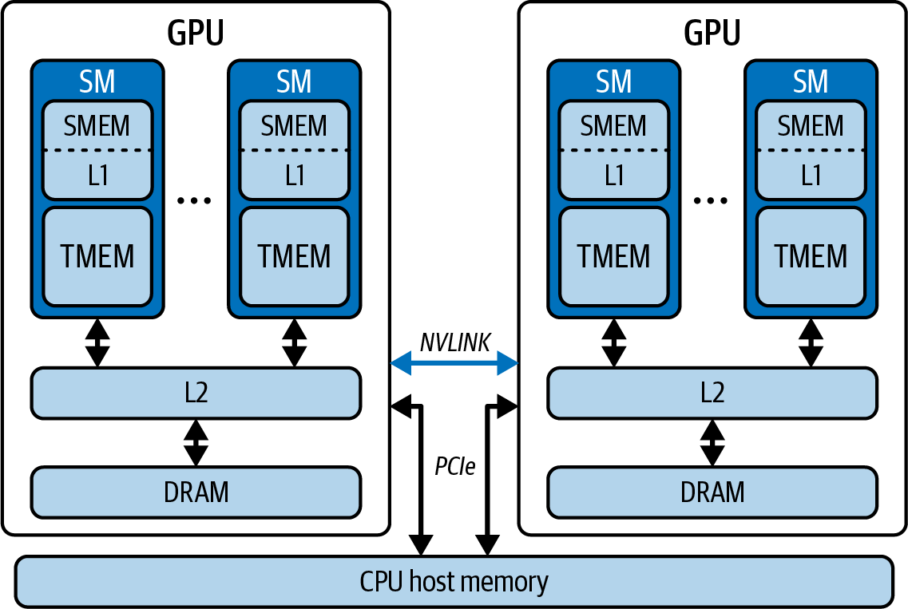
Figure 6-10. GPU memory hierarchy, including the CPU
TMEM 是一块专用的每 SM 256 KB 缓冲区，以每秒数十太字节的带宽透明地与 Tensor Core 通信。这减少了 Tensor Core 对全局内存的依赖。图 6-11 展示了 TMEM 与 SMEM 一起为 Tensor Core 提供服务，以计算 C = A × B 矩阵乘法。
TMEM is a dedicated 256 KB per-SM buffer that transparently communicates with the Tensor Cores at tens of terabytes per second of bandwidth. This reduces the Tensor Core's reliance on global memory. Figure 6-11 shows TMEM servicing the Tensor Cores-along with SMEM-to compute a C = A x B matrix multiply.
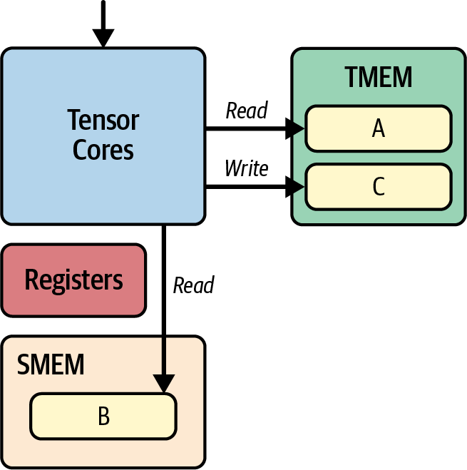
Figure 6-11. TMEM and SMEM servicing the Tensor Cores for C = A x B matrix multiply
在这里，操作数 B 来自 SMEM。操作数 A 位于 TMEM（不过它也可能位于 SMEM）。累加器同样位于 TMEM。分块（tile）通过 TMA（例如 cuda::memcpy_async）从全局内存经 L2 缓存流向 SMEM。
Here, operand B is sourced from SMEM. Operand A is in TMEM (although it may be in SMEM, as well). The accumulator is in TMEM, as well. Tiles flow from global memory to SMEM through L2 cache using TMA (e.g., cuda::memcpy_async). Operands move between SMEM and TMEM implicitly through Tensor Core instructions such as unified matrix-multiply-accumulate (UMMA) and tcgen05.mma.
表 6-5 展示了 Blackwell GPU 各级内存及其特性。随后对内存层级的每一级进行说明。
Table 6-5 shows the different levels of memory and their characteristics for the Blackwell GPU. A description of each level of the memory hierarchy follows.
表 6-5 Blackwell 内存层次结构和特性
| 级别 | 范围 | 容量 | 延迟 | 带宽（近似） |
|---|---|---|---|---|
| 寄存器 | 每线程（在 SM 上） | 每 SM 64K 个 32 位寄存器（每线程最多 255 个） | 接近寄存器延迟（寄存器读/写是单周期的，基本上免费） | 每 SM 数十 TB/s（寄存器端口） |
| 共享内存和 L1 缓存 | 每 SM | 228 KB（227 KB 可用）共享 + 剩余作为 L1/数据缓存 | ~20-30 周期（L1/共享内存基准测试） | TB/s（无 bank 冲突） |
| TMEM | 每 SM | 每 SM 256 KB SRAM 专用于张量核心 | ~10 周期（SM 上的专用 SRAM） | TB/s 级与张量核心通信 |
| 常量内存缓存 | 每 SM | ~8 KB 缓存用于 64 KB __constant__空间 |
~1 周期（warp 广播）当缓存且 warp 中所有线程访问同一地址时，由于常量缓存和广播行为，速度与寄存器一样快。分支或未命中情况会序列化或产生更高延迟 | TB/s 级（广播吞吐量） |
| L2 缓存 | GPU 范围（所有 SM） | 总共 126 MB | ~200 周期 | 多 TB/s 聚合 |
| 本地内存 | 每线程（溢出到 DRAM） | 接近无限（由全局内存支持） | 数百→1,000 周期（类似 DRAM） | ~8 TB/s（HBM 带宽） |
| 全局内存（HBM 或 DRAM） | 设备范围（片外 DRAM） | 每个 Blackwell B200 GPU 最多 180 GB（每个 Blackwell B300 GPU 最多~288 GB） | 数百→1,000 周期（全局内存延迟） | ~8 TB/s |
Table 6-5. Blackwell memory hierarchy and characteristics | Level | Scope | Capacity | Latency | Bandwidth (approx.) | |-------|-------|----------|---------|---------------------| | Registers | Per thread (on SM) | 64K 32-bit registers per SM (max 255 per thread) | Near-register latency (register reads/writes are single-cycle and essentially free) | Tens of TB/s per SM (register ports) | | Shared memory and L1 cache | Per SM | 228 KB (227 KB usable) shared + remainder as L1/data cache | ~20-30 cycles (L1/shared benchmarks) | TB/s (bank-conflict free) | | TMEM | Per SM | 256 KB SRAM per SM dedicated to Tensor Cores | ~10 cycles (dedicated SRAM on the SM) | TB/s-level communication with Tensor Cores | | Constant memory cache | Per SM | ~8 KB cache for 64 KB constant space | ~1 cycle (warp-broadcast) | As fast as a register when cached and all threads in a warp access the same address due to constant cache and broadcast behavior. Divergent or missed cases serialize or incur higher latency | TB/s-level (broadcast throughput) | | L2 cache | GPU-wide (all SMs) | 126 MB total | ~200 cycles | Multi-TB/s aggregate | | Local memory | Per thread (spills to DRAM) | Near-unlimited (backed by global memory) | 100s → 1,000 cycles (DRAM-like) | ~8 TB/s (HBM bandwidth) | | Global memory (HBM or DRAM) | Device-wide (off-chip DRAM) | Up to 180 GB per Blackwell B200 GPU (up to ~288 GB per Blackwell B300 GPU) | 100s → 1,000 cycles (global-memory latency) | ~8 TB/s |
由此你可以看出，为什么最大化在寄存器、共享内存以及 L1/L2 缓存中的数据复用——并最小化对全局内存和本地内存（由全局内存支撑）的依赖——对于高吞吐的 GPU 核函数至关重要。下面对该层级的每一级再作一些说明：
Here, you can see why maximizing data reuse in registers, shared memory, and L1/L2 caches-and minimizing reliance on global memory and local memory (which is backed by global memory)-is critical for high-throughput GPU kernels. What follows is more detail on each level of the hierarchy:
寄存器：在 Blackwell 上，每个线程从寄存器文件开始其旅程，这是一个小型片上 SM SRAM 阵列，保存每个线程的局部变量，基本上没有额外延迟。每个 SM 容纳 64K 个 32 位寄存器（共 256 KB），但硬件最多暴露每线程 255 个寄存器。因为读写在单周期内完成，几乎不与其他任何东西竞争，寄存器带宽可以达到每 SM 每秒数十 TB。但是，如果您的核函数需要更多寄存器--无论是通过许多线程局部变量还是编译器临时变量--溢出会进入本地内存，映射到片外 DRAM，并产生数百到超过一千周期的延迟。此本地内存如图 6-12 所示。
Registers: On Blackwell, each thread begins its journey with the register file, a small on-chip SM SRAM array that holds per-thread local variables with essentially no extra latency. Each SM houses 64K 32-bit registers (256 KB total), but the hardware exposes at most 255 registers per thread. Because reads and writes complete in a single cycle and contend with almost nothing else, register bandwidth can reach tens of TB per second per SM. However, if your kernel needs more registers-whether through many thread-local variables or compiler temporaries-spilling occurs into local memory, which maps to off-chip DRAM and incurs hundreds to over a thousand cycles of latency. This local memory is shown in Figure 6-12.
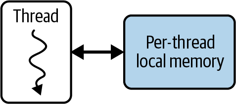
Figure 6-12. Local memory per thread
共享内存和 L1 数据缓存：再往上一级是统一的 L1/数据缓存和共享内存块。这是每个 SM 256 KB 的片上 SRAM，您可以使用cudaFuncSetAttribute()配合cudaFuncAttributePreferredSharedMemoryCarveout在像 Blackwell 这样具有统一 L1/纹理/共享内存的架构上动态分割用户管理的共享内存（每块最多 228 KB）。每个块的最大动态共享内存为 227 KB（CUDA 每块保留 1KB），每 SM 可分配的共享内存总量也受此限制约束。这里的访问成本大约 20-30 周期，但如果您设计线程块避免 bank 冲突，可以实现每秒 TB 级的吞吐量。线程块共享内存如图 6-13 所示。
Shared Memory and L1 Data Cache: One level up is the unified L1/data cache and shared-memory block. This is 256 KB of on-chip SRAM per SM, and you can dynamically partition user-managed shared memory (up to 228 KB per block) using cudaFuncSetAttribute() with cudaFuncAttributePreferredSharedMemoryCarveout on architectures like Blackwell that have unified L1/texture/shared memory. The maximum dynamic shared memory per block is 227 KB (CUDA reserves 1KB per block), and the total amount of shared memory allocatable per SM is also subject to this limit. Access costs around 20-30 cycles here, but if you design your thread blocks to avoid bank conflicts, you can achieve TB/s-level throughput. Thread-block shared memory is shown in Figure 6-13.
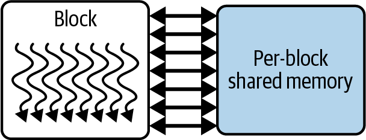
Figure 6-13. Thread-block shared memory
TMEM：TMEM 是每个 SM 专用的片上内存（Blackwell 上为 256 KB），由张量核心特定操作和指令使用，包括统一矩阵乘累加和tcgen05，在第 10 章讨论。它不是 CUDA C++中正常的指针可寻址空间。相反，传输由张量内存加速器（TMA）使用描述符编排。这使开发人员免于手动管理与张量核心的数据流。例如，某些算术操作数驻留在共享内存中，而累加器驻留在 TMEM 中。然后 TMA 负责在全局内存、共享内存和 TMEM 内存之间移动数据以执行计算。
TMEM: TMEM is per-SM dedicated on-chip memory (256 KB on Blackwell) used by Tensor Core-specific operations and instructions, including Unified Matrix Multiply Accumulate and tcgen05, discussed in Chapter 10. It is not a normal pointer-addressable space in CUDA C++. Instead, transfers are orchestrated by the Tensor Memory Accelerator (TMA) using descriptors. This frees developers from manually managing data flow with Tensor Cores. For example, certain arithmetic operands reside in shared memory while accumulators reside in TMEM. TMA then handles moving data between global memory, shared memory, and TMEM memory to perform computations.
常量内存缓存：对于小型、只读表，Blackwell 为每个 SM 提供约 8 KB 的常量内存缓存，支持 64 KB 的__constant__空间。当 warp 中所有 32 个线程加载同一地址时，此缓存在单周期内广播该值。分支读取会在线程间序列化。它非常适合共享小型查找表，如旋转位置编码、带线性偏置的注意力（ALiBi）斜率、LayerNorm γ/β向量和嵌入量化比例。这些在每个线程之间共享，无需全局内存流量。
Constant Memory Cache: For tiny, read-only tables, Blackwell provides a per-SM constant memory cache of about 8 KB fronting the 64 KB constant space. When all 32 threads in a warp load the same address, this cache broadcasts the value in a single cycle. Divergent reads serialize across lanes. It's perfect for sharing small lookup tables for rotary positional encodings, Attention with Linear Biases (ALiBi) slopes, LayerNorm γ/β vectors, and embedding quantization scales. These are shared across every thread without global-memory traffic.
L2 缓存：在片上 SRAM 之外是 L2 缓存，一个 126 MB 的 GPU 范围缓冲区，将所有 SM 连接到片外 HBM3e。延迟接近 200 周期，聚合带宽为每秒数十 TB，L2 吸收来自 L1 的溢出。使用 L2，数据由一个线程块获取，并由其他线程块重用，而无需重新访问 DRAM。要最大化 L2 的好处，将全局加载结构化为 128 字节、合并的事务，干净地映射到缓存行。我们稍后将展示如何做到这一点。
L2 Cache: Beyond the on-chip SRAM is the L2 cache, a 126 MB GPU-wide buffer that connects all SMs to off-chip HBM3e. With latency near 200 cycles and aggregate bandwidth in the tens of TB per second, L2 absorbs overflows from L1. With L2, data fetched by one thread block can be reused by other thread blocks without reaccessing DRAM. To maximize L2 benefits, structure your global loads into 128-byte, coalesced transactions that map cleanly to cache lines. We'll show how to do this later.
全局内存（HBM 或 DRAM）：全局内存层、本地溢出空间和 HBM 位于片外。任何溢出的寄存器或过大的自动数组驻留在本地内存中，支付完整的 DRAM 延迟（数百到超过 1,000 周期），尽管 HBM3e 的带宽约为~8 TB/s。对于 Blackwell，HBM3e 层提供最多 180 GB 的设备范围存储，总带宽约为~8 TB/s。但是，其高延迟使其成为链路中最慢的一环。每设备全局内存如图 6-14 所示。
Global Memory (HBM or DRAM): The global memory tier, local spill space, and HBM live off-chip. Any spilled registers or oversized automatic arrays reside in local memory, paying full DRAM latency (hundreds to more than 1,000 cycles) despite HBM3e's ~8 TB/s bandwidth. For Blackwell, the HBM3e tier provides up to 180 GB of device-wide storage at ~8 TB/s total. However, its high latency makes it the slowest link in the chain. Per-device global memory is shown in Figure 6-14.
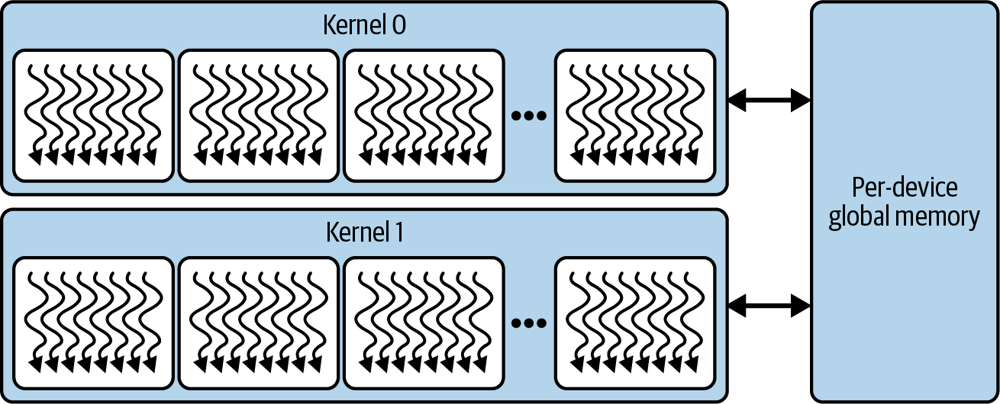
Figure 6-14. Per-device global memory, or HBM
借助 Nsight Compute 之类的工具跟踪溢出与缓存命中率，你可以让核函数尽可能贴近该内存层级的片上峰值运行。这些工具能帮助你有效地在寄存器、shared/L1、常量缓存与 L2 缓存之间编排数据。像 Blackwell 这样的现代 GPU 允许核函数开发者利用内存层级——使用 L2 缓存和统一的 L1/共享内存来缓冲并合并对 HBM 的访问，我们很快就会看到。
Using tools like Nsight Compute to track spills and cache hit rates, you can keep your kernels operating as close as possible to the on-chip peaks of this memory hierarchy. These tools can help you orchestrate data effectively through registers, shared/L1, constant cache, and L2 cache. Modern GPUs like Blackwell allow kernel developers to exploit the memory hierarchy by using L2 caches and unified L1/shared memory to buffer and coalesce accesses to HBM, as we'll soon see.
Blackwell B200 对外呈现为一块单一 GPU，构建于统一的全局地址空间之上。然而，它由两个光罩受限裸片（reticle-limited die）组成，二者通过 10 TB/s 的芯片间互连连接。每个裸片连接到四个 HBM3e 堆栈，共计八个 HBM3e 堆栈。不过，从开发者的视角看，HBM 内存访问在这一合并地址空间中是一致的，但了解这一架构的底层细节仍然是值得的。
The Blackwell B200 presents as a single GPU built with a unified, global address space. However, it's made up of two reticle-limited dies connected by a 10 TB/s chip-to-chip interconnect. Each die is connected to four HBM3e stacks for a total of eight HBM3e stacks. From a developer's perspective, however, HBM memory access is uniform across this combined address space, but it's worth understanding the low-level details of this architecture.
内存层级中各级的一致性点（point of coherency，PoC）取决于你的需求，以及线程进行通信所处的层级。它通常发生在以下层级：线程、线程块（又称 CTA）、线程块簇（又称 CTA 簇）、设备或系统，如图 6-15 所示。
The point of coherency (PoC) for the different levels in the memory hierarchy depends on your needs and the level at which the threads are communicating. It typically happens at the following levels: thread, thread-block (aka CTA), thread block cluster (aka CTA cluster), device, or system, as shown in Figure 6-15.
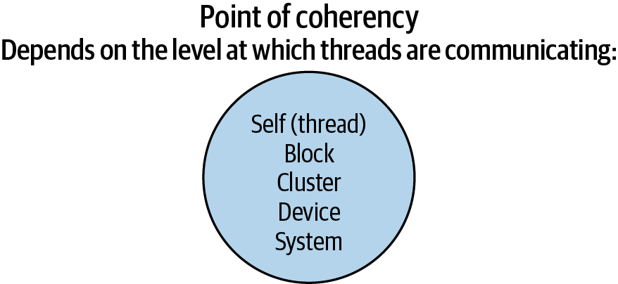
Figure 6-15. Point-of-memory coherency for your GPU threads
总而言之，理解 GPU 的内存层级并恰当地针对每一级优化非常重要。这样做，你就能构建 CUDA 核函数以最大化数据局部性、隐藏内存访问延迟、提高占用率，并充分发挥 Blackwell 强大的并行计算能力，稍后我们会加以探讨。首先，让我们讨论 NVIDIA 的统一内存——鉴于 Grace Hopper 与 Grace Blackwell 的 CPU-GPU 统一超级芯片设计，理解它十分重要。
In summary, it's important to understand the GPU's memory hierarchy and target each level appropriately. By doing so, you can structure your CUDA kernels to maximize data locality, hide memory-access latency, increase occupancy, and fully leverage Blackwell's massive parallel compute capabilities, as we'll explore in a bit. First, let's discuss NVIDIA's unified memory, which is important to understand given the unified CPU-GPU superchip designs of Grace Hopper and Grace Blackwell.
6.9 统一内存 (Unified Memory)¶
统一内存（Unified Memory，又称 CUDA 托管内存（Managed Memory））为你提供一个横跨 CPU 与 GPU 的单一、一致的地址空间，因此你不再需要费心管理分开的主机与设备缓冲区，也不必发起显式的 cudaMemcpy 调用。在底层，CUDA 运行时为每一次 cudaMallocManaged() 分配都以页面作为支撑，这些页面能够在连接你的 CPU 与 GPU 的任何互连上按需迁移，如图 6-16 所示。
Unified Memory (also known as CUDA Managed Memory) gives you a single, coherent address space that spans both CPU and GPU, so you no longer have to juggle separate host and device buffers or issue explicit cudaMemcpy calls. Under the hood, the CUDA runtime backs every cudaMallocManaged() allocation with pages that can migrate on-demand over whatever interconnect links your CPU and GPU, as shown in Figure 6-16.
虽然访问统一内存对开发人员非常友好，但它可能导致 CPU 和 GPU 之间不需要的按需页面迁移。这将引入隐藏的延迟和执行停顿。例如，如果 GPU 线程访问当前驻留在 CPU 内存中的数据，GPU 将发生页面错误并等待该数据通过 NVLink-C2C 互连传输。统一内存性能很大程度上取决于底层硬件。
While accessing unified memory is very developer-friendly, it can lead to unwanted on-demand page migrations between CPU and GPU. This introduces hidden latency and execution stalls. For example, if a GPU thread accesses data currently resident in CPU memory, the GPU will page-fault and wait for that data to be transferred over the NVLink-C2C interconnect. Unified Memory performance depends heavily on the underlying hardware.
在传统的 PCIe 或早期 NVLink 系统上，这些迁移以相对较低的带宽进行--通常使按需传输比手动cudaMemcpy更慢。但在 Grace Hopper 和 Grace Blackwell 超级芯片上，NVLink-C2C 结构在 CPU 的 HBM 和 GPU 的 HBM3e 之间提供高达~900 GB/s 的带宽。因此，页面错误驱动的迁移更接近设备原生速度--尽管它们仍然带有非零延迟。
On traditional PCIe or early NVLink systems, these migrations occur at relatively low bandwidth-often making on-demand transfers slower than manual cudaMemcpy. But on Grace Hopper and Grace Blackwell superchips, the NVLink-C2C fabric provides up to ~900 GB/s bandwidth between the CPU's HBM and the GPU's HBM3e. As a result, page-fault-driven migrations are closer to device-native speeds-although they still carry nonzero latency.
也就是说，核函数启动期间的任何意外页面错误都会在运行时将所需页面移动到位时停顿 GPU。为了避免这些"意外"停顿，您可以使用cudaMemPrefetchAsync()提前预取内存，如图 6-17 所示。
That said, any unexpected page faults during kernel launch will stall the GPU while the runtime moves the required pages into place. To avoid these "surprise" stalls, you can use cudaMemPrefetchAsync() to prefetch memory ahead of time, as shown in Figure 6-17.
这会提示驱动在你启动核函数之前，把指定范围搬到目标 GPU（或 CPU）上，从而把代价高昂的首次访问（first-touch）迁移转化为可重叠的异步传输。你还可以给出内存建议（memory advice），如下面的代码所示：
This hints to the driver to move the specified range to the target GPU (or CPU) before launching the kernel, turning expensive first-touch migrations into overlappable asynchronous transfers. You can also provide memory advice, as shown in the following code:
cudaMemAdvise(ptr, size, cudaMemAdviseSetPreferredLocation,
gpuId);
cudaMemAdvise(ptr, size, cudaMemAdviseSetReadMostly, gpuId);
在这里，你可以用 PreferredLocation 告诉驱动你将主要在何处使用数据，用 ReadMostly 表示数据在很大程度上是只读的，如图 6-18 所示。
Here, you can use PreferredLocation to tell the driver where you'll primarily use the data, and ReadMostly when it's mostly read-only, as shown in Figure 6-18.
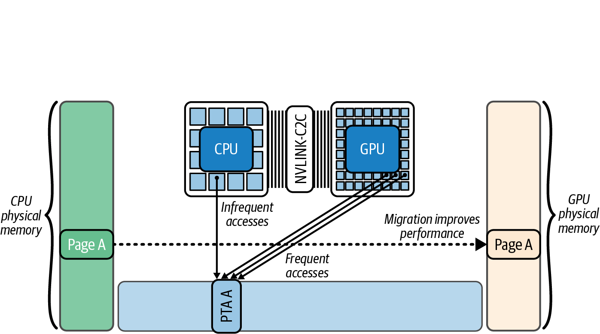
Figure 6-16. Automatic page migrations with CPU-GPU Unified Memory
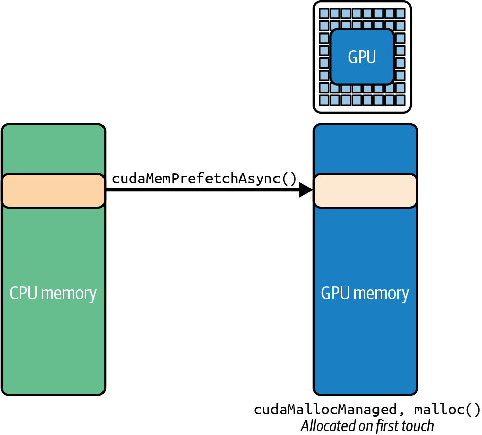
Figure 6-17. Streaming data from CPU to GPU over NVLink-C2C with cudaMemPrefetchAsync()
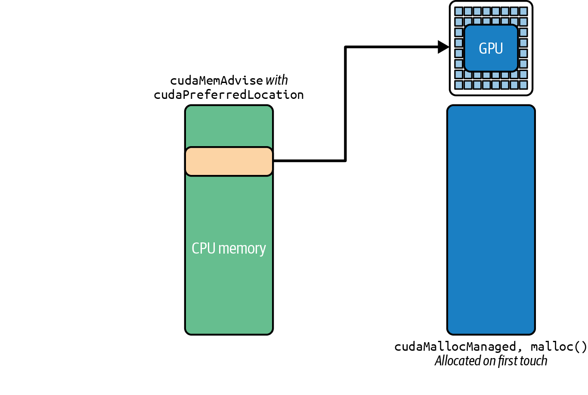
Figure 6-18. Specifying "preferred location" to tell the CUDA driver how the data is mostly used (e.g., ReadMostly for largely read-only workloads)
您还可以调用以下代码让第二个 GPU 映射这些页面而不在启动时触发迁移：
You can also call the following to let a second GPU map those pages without triggering migrations at launch:
默认情况下，任何 CUDA 流或设备核函数都可能在一次托管分配上触发缺页。这会导致意外的迁移和隐式同步。如果你知道某个缓冲区在同一时间只会在一个流/GPU 上使用，把它附着到那个流，就能让迁移与其他流中的操作相重叠。调用下面的代码可将该内存范围绑定到指定的流：
By default, any CUDA stream or device kernel can trigger a page fault on a managed allocation. This can cause unexpected migrations and implicit synchronizations. If you know a certain buffer will be used only in one stream/GPU at a time, attaching it to that stream allows migrations to overlap with operations in other streams. Call the following to bind that memory range to the specified stream:
在这种情况下，只有该流中的操作会触发错误并迁移其页面。这防止其他流意外地在上面停顿。因此，将范围附加到特定流会延迟其迁移，使其仅与该流的工作重叠。这避免了跨流同步。
In this case, only operations in that stream trigger faults and migrate its pages. This prevents other streams from unexpectedly stalling on it. So, attaching a range to a specific stream defers its migration so that it overlaps only with that stream's work. This avoids cross-stream synchronization.
在没有 NVLink-C2C 的多 GPU 系统中，你还可以使用 cudaMemcpyPeerAsync()，或预取到某个特定设备，以把数据固定在最近的 NUMA 本地 GPU 内存中，从而避免缓慢的远程访问。
In multi-GPU systems without NVLink-C2C, you can also use cudaMemcpyPeerAsync() or a prefetch to a specific device to pin data in the nearest NUMA-local GPU memory, preventing slow remote accesses.
简而言之，显式预取托管内存并提供内存建议，能够消除统一内存带来的大多数"意外"停顿。数据在核函数运行时已经就位，而不是让 GPU 暂停以按需取数。
In short, explicitly prefetching managed memory and providing memory advice can eliminate most of the "surprise" stalls from Unified Memory. Instead of the GPU pausing to fetch data on demand, the data is already where it needs to be when the kernel runs.
借助主动预取、有针对性的内存建议以及流附着等技术，统一内存可以在保留统一地址空间之简洁性的同时，交付非常接近手动 cudaMemcpy 的性能。
With techniques like proactive prefetching, targeted memory advice, and stream attachment, Unified Memory can deliver performance very close to manual cudaMemcpy while maintaining the simplicity of a unified address space.
6.10 保持高占用率和 GPU 利用率 (Maintaining High Occupancy and GPU Utilization)¶
GPU 通过并发运行大量 warp 来维持性能，这样当一个 warp 因等待数据而停顿时，另一个 warp 就能运行。这种在 warp 之间快速切换的能力使 GPU 得以隐藏内存延迟。正如我们前面所述，一个 SM 的容量中被活跃 warp 实际占据的比例，被称为 占用率。
GPUs sustain performance by running many warps concurrently so that when one warp stalls waiting for data, another warp can run. This ability to rapidly switch between warps allows a GPU to hide memory latency. As we described earlier, the fraction of an SM's capacity actually occupied by active warps is called occupancy.
如果占用率低（只有少数活动 warp），当一个 warp 等待内存时，SM 可能会空闲。这会导致 SM 利用率低。在 Blackwell 上，由于其大型寄存器文件（每 SM 64K 寄存器），实现高占用率稍微容易一些，可以支持许多 warp 而不溢出。
If occupancy is low (few active warps), the SM may sit idle when a warp waits on memory. This leads to low SM utilization. On Blackwell, achieving high occupancy is slightly easier due to its large register file (64K registers per SM), which can support many warps without spilling.
正如你前面所见，一个 warp 中的每个线程最多可使用 255 个寄存器。务必使用你的剖析工具来检查实际占用率——并据此调整核函数的块大小和寄存器用量。
As you saw earlier, each thread in a warp can use up to 255 registers. Make sure to use your profiling tools to check achieved occupancy-and adjust your kernel's block size and register usage accordingly.
反过来，高占用率（每 SM 有许多活跃 warp）会让 GPU 计算单元保持繁忙，因为当一个 warp 在等待内存访问时，其他 warp 会切入 SM 并执行。这就掩盖了漫长的内存访问延迟。这通常被称为 隐藏延迟。
Conversely, high occupancy (many active warps per SM) will keep the GPU compute units busy since, while one warp waits on memory access, others will swap in to the SM and execute. This masks the long memory access delays. This is often referred to as hiding latency.
让我们展示一个能提升占用率、并最终提升 GPU 利用率、吞吐量与整体核函数性能的示例。这是 CUDA 性能优化最基本的规则之一：启动足够的并行工作以充分占满 GPU。
Let's demonstrate an example that improves occupancy and ultimately GPU utilization, throughput, and overall kernel performance. This is one of the most fundamental rules of CUDA performance optimization: launch enough parallel work to fully utilize the GPU.
如果你的实际占用率（正在使用的硬件线程槽的比例）远低于 GPU 的上限且性能不佳，首要的补救办法就是增加并行度——使用更多的块或线程，使占用率在现代 GPU 上接近 80%–100% 的区间。
If your achieved occupancy (the fraction of hardware thread slots in use) is far below the GPU's limits and performance is poor, the first remedy is to increase parallelism-use more blocks or threads so that occupancy approaches the 80%-100% range on modern GPUs.
反之，如果占用率已经处于中到高的水平，但核函数受内存吞吐所限，把它推到 100% 可能也无济于事。你通常只需要恰好足够多的 warp 来隐藏延迟，超过之后瓶颈可能就在别处了（例如内存带宽）。
Conversely, if occupancy is already moderate to high but the kernel is memory-throughput bottlenecked, pushing it to 100% may not help. You typically just need enough warps to hide latency; beyond that, the bottleneck is likely elsewhere (e.g., memory bandwidth).
为说明占用率的影响，考虑一个非常简单的操作：把两个长度为 N 的向量相加（计算 C = A + B）。我们将考察两种核函数实现：addSequential 和 addParallel。addSequential 使用单个线程（或单个 warp）在循环中把全部 N 个元素相加。addParallel 使用许多线程，使加法在整个数组上并发完成。
To illustrate the impact of occupancy, consider a very simple operation: adding two vectors of length N (computing C = A + B). We'll examine two kernel implementations: addSequential and addParallel.
addSequential使用单个线程（或单个 warp）在循环中添加所有 N 个元素。addParallel使用许多线程，使加法在数组中并发完成。
addSequential uses a single thread (or a single warp) to add all N elements in a loop. addParallel uses many threads so that additions are done concurrently across the array.
在顺序版本中，一个 GPU 线程串行处理整个工作负载，如下所示：
In the sequential version, a single GPU thread processes the entire workload serially, as shown below:
#include <cuda_runtime.h>
const int N = 1'000'000;
// Single thread does all N additions
__global__ void addSequential(const float* A,
const float* B,
float* C,
int N)
{
if (blockIdx.x == 0 && threadIdx.x == 0) {
for (int i = 0; i < N; ++i) {
C[i] = A[i] + B[i];
}
}
}
int main()
{
// Allocate and initialize host
float* h_A = nullptr;
float* h_B = nullptr;
float* h_C = nullptr;
cudaMallocHost(&h_A, N * sizeof(float));
cudaMallocHost(&h_B, N * sizeof(float));
cudaMallocHost(&h_C, N * sizeof(float));
for (int i = 0; i < N; ++i) {
h_A[i] = float(i);
h_B[i] = float(i * 2);
}
// Allocate device
float *d_A, *d_B, *d_C;
cudaMalloc(&d_A, N * sizeof(float));
cudaMalloc(&d_B, N * sizeof(float));
cudaMalloc(&d_C, N * sizeof(float));
// Copy inputs to device
cudaMemcpy(d_A, h_A, N * sizeof(float),
cudaMemcpyHostToDevice);
cudaMemcpy(d_B, h_B, N * sizeof(float),
cudaMemcpyHostToDevice);
// Launch: one thread
// Note: This kernel assumes <<<1,1>>>
// (one block, one thread).
// Do not change the launch config when running this example.
addSequential<<<1,1>>>(d_A, d_B, d_C, N);
// Ensure completion before exit
cudaDeviceSynchronize();
// Copy d_C => h_C (back to host)
cudaMemcpy(h_C, d_C, N * sizeof(float),
cudaMemcpyDeviceToHost);
// Cleanup
cudaFree(d_A);
cudaFree(d_B);
cudaFree(d_C);
cudaFreeHost(h_A);
cudaFreeHost(h_B);
cudaFreeHost(h_C);
return 0;
}
在这个单线程版本中，GPU 的庞大资源大部分空闲。只有一个 warp，甚至 warp 中只有一个线程在工作，而所有其他线程都空闲。结果是占用率非常低，最终性能很差。
In this single-thread version, the GPU's massive resources are mostly idle. There is only one warp, and even within that warp only one thread is doing work while all other threads are idle. The result is very low occupancy and ultimately poor performance.
还必须小心避免在 PyTorch 等高级库和框架中间接执行低效的 GPU 代码。例如，以下简单的 PyTorch 代码错误地使用 Python for 循环执行逐元素操作，逐个在 GPU 上发出 N 个单独的加法操作：
You must also be careful to avoid indirectly executing inefficient GPU code in high-level libraries and frameworks like PyTorch. For example, the following naive PyTorch code incorrectly uses a Python for loop to perform elementwise operations, issuing N individual addition operations on the GPU one by one:
import torch
N = 1_000_000
A = torch.arange(N, dtype=torch.float32, device='cuda')
B = 2 * A
C = torch.empty_like(A)
# Ensure all previous work is done
torch.cuda.synchronize()
# Naive, Sequential GPU operations - DO NOT DO THIS
with torch.inference_mode(): # avoids unnecessary autograd graph
# construction
# This launches N tiny GPU operations serially
for i in range(N):
C[i] = A[i] + B[i]
torch.cuda.synchronize()
这段代码实际上把 GPU 当成了一个标量的、非并行的处理器。它的占用率极低，与前面原生的 addSequential CUDA C++ 代码类似。
This code effectively uses the GPU as a scalar, nonparallel processor. It achieves very low occupancy, similar to the previous native addSequential CUDA C++ code.
让我们优化这段 CUDA 核函数与 PyTorch 代码，实现向量加法操作的并行版本。图 6-19 展示了向量化加法操作的工作方式。
Let's optimize the CUDA kernel and PyTorch code to implement a parallel version of the vector addition operation. Figure 6-19 shows how vectorized addition operations work.
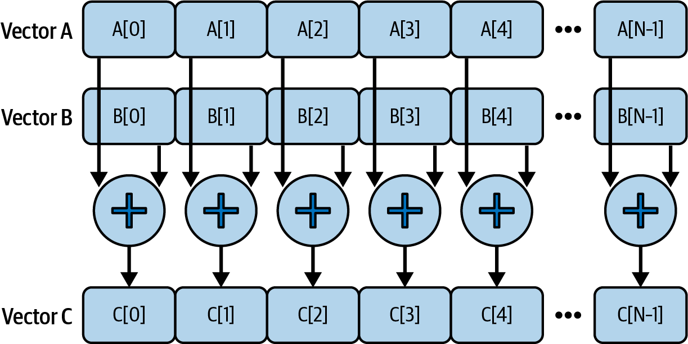
Figure 6-19. Vectorized addition operating happening in parallel across elements in the vectors
在下面的 CUDA C++ 代码中，我们启动足够多的线程以覆盖所有元素（<<< (N+255)/256, 256 >>>），使每块 256 个线程在所需数量的块上并行处理 N 个元素：
In the following CUDA C++ code, we launch enough threads to cover all elements (<<< (N+255)/256, 256 >>>) so that 256 threads per block process N elements in parallel across however many blocks are needed:
#include <cuda_runtime.h>
const int N = 1'000'000;
// One thread per element
__global__ void addParallel(const float* __restrict__ A,
const float* __restrict__ B,
float* __restrict__ C,
int N)
{
int idx = blockIdx.x * blockDim.x + threadIdx.x;
if (idx < N) {
C[idx] = A[idx] + B[idx];
}
}
int main()
{
// Allocate and initialize host (pinned for faster DMA)
float* h_A = nullptr;
float* h_B = nullptr;
float* h_C = nullptr;
cudaMallocHost(&h_A, N * sizeof(float));
cudaMallocHost(&h_B, N * sizeof(float));
cudaMallocHost(&h_C, N * sizeof(float));
for (int i = 0; i *lt; N; ++i) { h_A[i] = float(i); h_B[i] =
float(2*i); }
// Create a non-blocking stream and allocate device buffers
cudaStream_t s; cudaStreamCreateWithFlags(&s,
cudaStreamNonBlocking);
float *d_A = nullptr, *d_B = nullptr, *d_C = nullptr;
cudaMallocAsync(&d_A, N * sizeof(float), s);
cudaMallocAsync(&d_B, N * sizeof(float), s);
cudaMallocAsync(&d_C, N * sizeof(float), s);
// Async HtoD copies on the same stream
cudaMemcpyAsync(d_A, h_A, N*sizeof(float),
cudaMemcpyHostToDevice, s);
cudaMemcpyAsync(d_B, h_B, N*sizeof(float),
cudaMemcpyHostToDevice, s);
// Launch (same stream)
int threads = 256;
int blocks = (N + threads - 1) / threads;
addParallel<<<blocks, threads, 0, s>>>(d_A, d_B, d_C, N);
// Async DtoH copy and stream sync
cudaMemcpyAsync(h_C, d_C, N*sizeof(float),
cudaMemcpyDeviceToHost, s);
cudaStreamSynchronize(s);
// Cleanup (stream-ordered free)
cudaFreeAsync(d_A, s); cudaFreeAsync(d_B, s);
cudaFreeAsync(d_C, s);
cudaStreamDestroy(s);
cudaFreeHost(h_A); cudaFreeHost(h_B); cudaFreeHost(h_C);
return 0;
}
当 N 足够大时，GPU 利用率的差异非常显著。现在让我们优化这段 PyTorch 代码——它启动一个单一的向量化核函数（A + B），像前面优化过的 addParallel CUDA C++ 示例那样，在 GPU 上并发调动许多线程。下面是 PyTorch 代码的并行版本：
For large enough N, the difference in GPU utilization is dramatic. Now let's optimize the PyTorch code, which launches a single vectorized kernel (A + B) that launches many threads on the GPU concurrently, just like the previous optimized addParallel CUDA C++ example. Here is the parallel version of the PyTorch code:
# add_parallel.py
import torch
N = 1_000_000
A = torch.arange(N, dtype=torch.float32, device='cuda')
B = 2 * A
torch.cuda.synchronize()
# Proper parallel approach using vectorized operation
# Launches a single GPU kernel that adds all elements in parallel
C = A + B
torch.cuda.synchronize()
在实践中，当你使用向量化的张量操作时，PyTorch 这类高级框架会做出正确的处理。只需注意：在 GPU 操作外围引入 Python 层的循环会使工作串行化，并对性能产生负面影响。如有可能应加以避免。除非你在编写某种新颖的东西，否则几乎总能找到一个经过优化的 PyTorch 原生实现——包括 PyTorch 编译器生成的代码。
In practice, high-level frameworks like PyTorch will do the right thing when you use vectorized tensor operations. Just be aware that introducing Python-level loops around GPU operations will serialize work and negatively impact performance. Avoid them if possible. Unless you are writing something novel, there is almost always an optimized PyTorch-native implementation available-including code emitted by the PyTorch compiler.
为了量化使用并行实现相较串行实现的性能影响，我们可以用 Nsight Systems 和 Nsight Compute 来测量两种方法的核函数总执行时间、GPU 利用率、占用率以及 warp 执行效率指标。下面是 Nsight Systems（nsys）和 Nsight Compute（ncu）命令：
To quantify the performance impact of using a parallel versus sequential implementation, we can use Nsight Systems and Nsight Compute to measure the total kernel execution time, GPU utilization, occupancy, and warp execution efficiency metrics for the two approaches. Here are the Nsight Systems (nsys) and Nsight Compute (ncu) commands:
# Sequential add
nsys profile \
--stats=true \
-t cuda,nvtx \
-o sequential_nsys_report \
./add_sequential.py
ncu \
--section SpeedOfLight \
--metrics \
sm__warps_active.avg.pct_of_peak_sustained_active,gpu__time_durat
ion.avg \
--target-processes all \
--print-summary per-gpu \
-o sequential_ncu_report \
./add_sequential.py
# Parallel add
nsys profile \
--stats=true \
-t cuda,nvtx \
-o parallel_nsys_report \
./add_parallel.py
ncu \
--section SpeedOfLight \
--metrics sm__warps_active.avg.pct_of_peak_sustained_active \
--target-processes all \
--print-summary per-gpu \
-o parallel_ncu_report \
./add_parallel.py
我们用 nsys 来揭示时间花在了哪里，以及 GPU 是被"饿着"还是被阻塞。然后用 ncu 来解释核函数为何呈现这样的表现——也许是由于占用率低，等等。
We use nsys to reveal where time is being spent and whether the GPU is starved or blocked. Then we use ncu to explain why the kernel executed the way it did-likely due to poor occupancy, etc.
如果您只运行 nsys，可能会错过细粒度的核函数低效问题。如果您只运行 ncu，您不会知道您的核函数是否被足够快地馈送数据，例如。表 6-6 展示了统一的结果。
If you only run nsys, you might miss fine-grained kernel inefficiencies. If you only run ncu, you won't know if your kernels were being fed data fast enough, for example. Table 6-6 shows the consolidated results.
表 6-6 比较顺序与并行 CUDA 核函数
| 指标 | add_sequential | add_parallel |
|---|---|---|
| 核函数执行时间（ms） | 48.21 | 2.17 |
| GPU 利用率 | 1.5% | 95% |
| 实现的占用率 | 1.3% | 38.7% |
| warp 执行效率 | 3.1% | 100% |
其他剖析工具可能对这些指标使用不同的标签。例如，Nsight Systems 报告的是整体的"GPU Utilization"，而 Nsight Compute 提供的是每核函数的"SM Active %"指标——但两者都反映了 GPU 的 SM 被活跃 warp 占据的充分程度。
Other profiling tools may label these metrics differently. For example, Nsight Systems reports overall "GPU Utilization," while Nsight Compute provides a per-kernel "SM Active %" metric-but both reflect how fully the GPU's SMs were occupied by active warps.
正如预期，从单线程、单 warp 的实现转向完全并行、多 warp 的实现，将平均占用率从 1.3% 提升到了 ~38.7%。这将运行时间缩短了约 22×，从 48.21 ms 降至 2.17 ms。
As expected, moving from a single-thread, single-warp implementation to a fully parallel, multiwarp implementation improves occupancy from 1.3% to ~38.7% on average. This reduces the runtime by about 22x from 48.21 ms down to 2.17 ms.
在顺序情况下，只有一个 warp，只有一个线程在单个 SM 上工作。这就是为什么我们看到 1.5%的低 GPU 利用率，而在并行情况下，许多 SM 正在运行多个活动 warp。这将 warp 执行效率从 3.1%提高到 100%，因为 warp 中所有 32 个线程在每条指令期间都在做有用的工作。这将 GPU 利用率从 1.5%提高到 95%。
In the sequential case, there is only one warp, with only one thread working on a single SM. That's why we see low GPU utilization of 1.5%, whereas in the parallel case, many SMs are running multiple active warps. This increases warp execution efficiency from 3.1% to 100% because all 32 threads in the warp are doing useful work during each instruction. This raises GPU utilization from 1.5% to 95%.
这个示例说明了为什么在 GPU 上足够的并行性至关重要。无论每个线程有多快，您都需要大量线程来利用 GPU 的吞吐量潜力。
This example illustrates why sufficient parallelism on the GPU is critical. No matter how fast each thread is, you need many threads to exploit the GPU's throughput potential.
请记住，GPU 是为吞吐量优化的处理器，与 CPU 交互以启动 CUDA 核函数--以及内存子系统--从缓存、共享内存和全局内存加载数据。因此，GPU 性能大大受益于隐藏这些延迟。
Remember, GPUs are throughput-optimized processors that interact with the CPU to launch CUDA kernels-as well as the memory subsystem-to load data from caches, shared memory, and global memory. As such, GPU performance greatly benefits from hiding these latencies.
如果编写得当，核函数将指示 GPU 并行地交织来自不同 warp 的内存加载和计算（例如加法）。这有助于在 warp 之间隐藏内存延迟。
If written properly, the kernel will instruct the GPU to interleave memory loads and computations (e.g., additions) from different warps in parallel. This helps hide memory latency across warps.
特别是，在多个 warp 内运行的并行核函数受益于 warp 级别的延迟隐藏。当一个 warp 等待内存加载时，另一个 warp 可以执行加法计算，而另一个可能正在获取下一个数据等。我们将在接下来的章节中探讨许多隐藏内存延迟的技术。
In particular, parallel kernels running within multiple warps benefit from warp-level latency hiding. While one warp waits on a memory load, another warp can execute addition computations, and yet another might be fetching the next data, etc. We'll explore many techniques to hide memory latency in upcoming chapters.
在串行核函数中，当一个 warp 在等待时，并没有其他 warp 可运行，因此硬件流水线常常闲置。其时间线是一长串操作，其间在等待内存时留有空闲间隙。而在并行版本中，这些间隙被其他 warp 的工作填满，于是 GPU 持续保持忙碌。二者的对比如图 6-20 所示。
In a sequential kernel, there are no other warps to run while one waits, so the hardware pipeline is often idle. The timeline is a series of long operations with idle gaps during memory waits. In the parallel version, those gaps are filled by other warps' work, so the GPU stays busy. The comparison is shown in Figure 6-20.
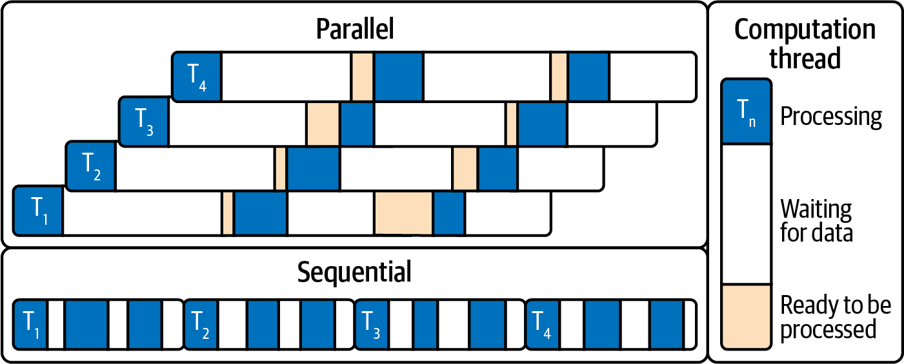
Figure 6-20. Parallel versus sequential timeline comparison
在这里，串行时间线是一长串操作，其间在等待内存时留有空闲间隙。而在并行版本中，这些间隙被其他 warp 的工作填满，于是 GPU 持续保持忙碌。
Here, the sequential timeline is one long series of operations with idle gaps during memory waits. In the parallel version, those gaps are filled by other warps' work, so the GPU is busy continuously.
关键的一点是，首先要确保有足够的并行工作来充分占用 GPU。高占用率——即有足够多的 warp 来掩盖延迟——能最大化吞吐并最小化空闲停顿。在我们的例子中，并行化把 GPU 利用率提升到了 ~95%。
The key takeaway is to first ensure enough parallel work to fully utilize the GPU. High occupancy-enough warps to cover latency-maximizes throughput and minimizes idle stalls-in our example, parallelization raised GPU utilization to ~95%.
一旦启动了足够的线程，下一步就是优化每个 warp 执行的效率，通过指令级并行和其他每线程改进。但请注意：即使在 100%占用率下，如果工作负载受内存限制--即受慢速内存访问而非计算限制--性能仍可能受损。
Once you've launched enough threads, the next step is to optimize the efficiency of each warp's execution, through instruction-level parallelism and other per-thread improvements. But be careful: even at 100% occupancy, if the workload is memory bound-i.e., limited by slow memory accesses rather than computation-performance can still suffer.
一个广为人知的访存受限工作负载的例子，是 LLM 的"解码"（decode）阶段。在解码期间，LLM 需要把大量数据（模型权重或参数）从全局 HBM 内存搬运到 GPU 寄存器和共享内存中。
A well-known example of a memory-bound workload is the "decode" phase of an LLM. During decoding, the LLM needs to move massive amounts of data (model weights or parameters) from global HBM memory to GPU registers and shared memory.
由于现代 LLM 包含数千亿个参数（再乘以，比如说，每个参数 8 比特即 1 字节），这些模型的体积可达数百 GB。将如此海量的数据搬入搬出 GPU，很容易就会把内存带宽占满。
Since modern LLMs contain hundreds of billions of parameters (multiplied by, say, 8 bits, or 1 byte, per parameter), the model can be hundreds of GB in size. Moving that much data in and out of the GPU can easily saturate memory bandwidth.
GPU 的 FLOPS 正在超越内存带宽的增长。例如，Blackwell 的 HBM3e 提供 ~8 TB/s，但算力和模型规模增长得更快。因此，优化内存搬运对于避免现代 AI 工作负载中的访存受限瓶颈绝对至关重要。
GPU FLOPS are outpacing memory bandwidth. For instance, Blackwell's HBM3e delivers ~8 TB/s, but compute capability and model sizes are growing even faster. As such, optimizing memory movement is absolutely critical to avoid memory‐bound bottlenecks in modern AI workloads.
6.11 使用启动边界调整占用率 (Tuning Occupancy with Launch Bounds)¶
在某些情况下，仅仅使用更多线程并不足够——尤其是当每个线程使用了大量资源（如寄存器和共享内存）时。我们可以通过 CUDA 的 _launchbounds 核函数注解，引导编译器针对占用率优化。
In some cases, simply using more threads isn't enough-especially if each thread uses a lot of resources such as registers and shared memory. We can guide the compiler to optimize for occupancy by using CUDA's _launchbounds kernel annotation.
此注释允许我们在编译时为核函数指定两个参数：我们将启动的每块最大线程数和希望在每个 SM 上保持驻留的最小线程块数。这些提示影响编译器的寄存器分配和内联决策。示例如下：
This annotation allows us to specify two parameters at compile time for a kernel: the maximum number of threads per block we will launch and the minimum number of thread blocks we want to keep resident on each SM. These hints affect the compiler's register allocation and inlining decisions. An example follows:
在这里，_launchbounds(256, 16) 承诺该 CUDA 核函数启动时，每个线程块的线程数绝不会超过 256。它还请求编译器分配足够的寄存器并内联函数，使至少 16 个每块 256 线程的线程块（即 4,096 个线程，16 blocks × 256 threads per block）能够同时常驻于该 SM 上。
Here, _launchbounds(256, 16) promises that the CUDA kernel will never be launched with more than 256 threads in a block. It also requests that the compiler allocate enough registers and inline functions so that at least 16 blocks of 256 threads, or 4,096 threads (16 blocks x 256 threads per block), can be resident on the SM simultaneously.
请记住，在现代 GPU（例如 Blackwell）上，每个线程块最多只能有 1,024 个线程，每个 SM 最多只能有 2,048 个常驻线程。
Remember that we can have only 1,024 threads per block and at most 2,048 resident threads per SM on modern GPUs (e.g., Blackwell).
在实践中，由于当前的 NVIDIA GPU 将每个 SM 限制为总共 2,048 个线程、每个线程块限制为 1,024 个线程，编译器会把你的请求削减到硬件上限——在本例中即每个 SM 2,048 个线程（8 blocks × 256 threads per block）。并且它会发出一条警告，因为 4,096 的请求（16 blocks × 256 threads per block）超出了该 SM 的容量。
In practice, since current NVIDIA GPUs limit each SM to 2,048 total threads and each block to 1,024 threads, the compiler will reduce your request to the hardware maximum-in this case, 2,048 threads (8 blocks x 256 threads per block) per SM. And it will emit a warning since the 4,096 request (16 blocks x 256 threads per block) exceeds the SM's capacity.
警告将类似于"ptxas warning: Value of threads per SM...is out of range. .minnctapersm will be ignored."
The warning will be something like "ptxas warning: Value of threads per SM...is out of range. .minnctapersm will be ignored."
在实践中，使用 _launchbounds 常常会促使编译器限制每线程的寄存器用量（有时还会限制展开或内联），以避免溢出并允许更高的占用率。我们本质上是在牺牲一点每线程性能，不再用尽最后一个寄存器、也不把循环展开到极致。换来的是通过让更多 warp 保持在飞状态，从而获得更稳定的 warp 吞吐。
In practice, using _launchbounds often causes the compiler to cap per-thread register usage (and to sometimes restrict unrolling or inlining) to avoid spilling and to allow higher occupancy. We are essentially trading a bit of per-thread performance and not using every last register or unrolling to the max. This is in exchange for more consistent warp throughput by keeping more warps in flight.
提高占用率必须与每线程资源相权衡。 你要避免寄存器溢出（register spilling）——当你强行塞入过多线程、导致它们耗尽寄存器并溢出到本地内存时，就会发生溢出，从而引发缓慢的内存访问。
Increasing occupancy must be balanced against per-thread resource limits. You want to avoid register spilling (if you force too many threads such that they run out of registers and spill to local memory, causing slow memory accesses).
您还可以使用 CUDA 占用率 API 在运行时确定最佳启动配置。例如，cudaOccupancyMaxPotentialBlockSize()将计算为给定核函数产生最高占用率的块大小，考虑其寄存器和共享内存使用情况。本质上，cudaOccupancyMaxPotentialBlockSize可以自动调整您的块大小以获得最佳占用率，如下所示：
You can also use the CUDA occupancy API to determine the best launch configuration at runtime. For example, cudaOccupancyMaxPotentialBlockSize() will compute the block size that yields the highest occupancy for a given kernel, taking into account its register and shared-memory usage. Essentially, cudaOccupancyMaxPotentialBlockSize can auto-tune your block size for best occupancy, as shown below:
int minGridSize = 0, bestBlockSize = 0;
// If your kernel uses dynamic shared memory (extern __shared__),
// set this correctly:
size_t dynSmemBytes = /* bytes per block (e.g., tiles *
sizeof(T)) */ 0;
cudaOccupancyMaxPotentialBlockSize(
&minGridSize, &bestBlockSize,
myKernel,
dynSmemBytes, // must match your kernel's dynamic shared
// memory use
/* blockSizeLimit = */ 0);
// Compute a grid that covers N, but don't go below the min grid
// that saturates occupancy
int gridSize = std::max(minGridSize, (N + bestBlockSize - 1) /
bestBlockSize);
myKernel<<<gridSize, bestBlockSize, dynSmemBytes>>>(...);
这个 API 会计算：在给定核函数资源用量的情况下，每个线程块用多少线程可能优化占用率。随后我们就可以在核函数启动时使用 bestBlockSize（以及建议的网格大小）。需要重点指出的是，minGridSize 是在该设备上让该核函数占用率饱和的最小网格大小，它未必就是覆盖长度为 N 的输入所需的正确网格大小。请计算 gridSize = max(minGridSize, ceil_div(N, bestBlockSize))，并且如果核函数使用了 extern shared，就传入它实际的动态共享内存字节数。
This API calculates how many threads per block would likely optimize occupancy, given the kernel's resource usage. We can then use the bestBlockSize (and suggested grid size) for the kernel launch. It's important to note that minGridSize is the minimum grid size to saturate occupancy for this kernel on this device. It's not necessarily the right grid size to cover an input of length N. Compute gridSize = max(minGridSize, ceil_div(N, bestBlockSize)), and pass the kernel's actual dynamic shared-memory bytes if the kernel uses extern shared.
通过对±1-2 个候选块大小的核函数计时来验证占用率 API 建议。现代 GPU 上的寄存器压力和 L2 行为实际上可能使稍低于最大占用率的配置在实践中更快。
Validate Occupancy API suggestions by timing kernels at ±1-2 candidate block sizes. Register pressure and L2 behavior on modern GPUs can actually make a slightly sub-maximal occupancy configuration faster in practice.
采用之后，编译器的启发式判断通常是不错的，但 _launchbounds 和占用率计算器能在需要时给你显式的控制权。当你知道自己的核函数可以用一些每线程资源换取更多活跃 warp 时，就使用它们。这有助于防止因线程过"重"而导致 SM 占用不足。
When applied, the compiler's heuristics are usually good, but _launchbounds and occupancy calculators give you explicit control when needed. Use them when you know your kernel can trade some per-thread resource usage for more active warps. This helps prevent underoccupying SMs due to heavy threads.
寄存器与占用率之间的取舍很重要。每线程使用更少的寄存器——或用启动边界给它们设上限——可以让更多 warp 常驻，从而改善延迟隐藏。然而，寄存器用得太少会迫使编译器把数据溢出到本地内存，损害性能。找到那个最佳平衡点往往需要实验。Nsight Compute 的 "Registers Per Thread" 和 "Occupancy" 指标可以在这里为你提供指引。
The trade-off between registers and occupancy is important. Using fewer registers per thread-or capping them using launch bounds-allows more warps to be resident, which improves latency hiding. However, using too few registers can force the compiler to spill data to local memory, hurting performance. Finding the sweet spot often requires experimentation. Nsight Compute's "Registers Per Thread" and "Occupancy" metrics can guide you here.
6.12 使用 NVIDIA Compute Sanitizer 调试功能正确性 (Debugging Functional Correctness with NVIDIA Compute Sanitizer)¶
由于 CUDA 应用每个核函数可能派生出成千上万个线程，传统的调试方法可能无法捕捉到隐蔽的内存缺陷和竞态条件。NVIDIA Compute Sanitizer 是随 CUDA Toolkit 一同提供的功能正确性套件，它通过在运行时对代码进行插桩，在开发早期就发现错误，从而应对这些挑战。这减少了调试的往复次数，并提升了整体代码可靠性。
Since CUDA applications can spawn thousands of threads per kernel, traditional debugging may fail to catch subtle memory bugs and race conditions. NVIDIA Compute Sanitizer, a functional-correctness suite included with the CUDA Toolkit, addresses these challenges by instrumenting code at runtime to find errors early in development. This reduces debugging interactions-and improves overall code reliability.
Sanitizer 通过 compute-sanitizer 命令行工具调用，并支持 NVIDIA Tools Extension（NVTX）注解以进行更细粒度的分析。NVTX 应当被广泛用于正确性分析和性能分析。使用该命令行工具时，你可以用 --option value 指定选项，并加入诸如 --error-exitcode 的标志以在出错时使程序失败。你还可以施加过滤器，只对特定核函数检查，例如使用 --kernel-name 和 --kernel-name-exclude。你可以用 --nvtx yes 启用 NVTX，以帮助收窄分析范围，例如在内存泄漏报告中最小化误报：
Sanitizer is invoked using the compute-sanitizer CLI and supports NVIDIA Tools Extension (NVTX) annotations for finer-grained analysis. NVTX should be used extensively for both correctness and performance analysis. To use the CLI, you can specify options with --option value and include flags like --error-exitcode to fail on errors. You can also apply filters to sanitize only specific kernels, such as using --kernel-name and --kernel-name-exclude. You can enable NVTX with --nvtx yes to help narrow the scope of your analysis and minimize false positives in memory-leak reports, for instance:
建议借助 --error-exitcode，并配合核函数过滤器和 NVTX 区域注解，将 Compute Sanitizer 集成到你的持续集成（continuous integration，CI）流水线中，以捕捉正确性回归。
It's recommended to integrate Compute Sanitizer into your continuous integration (CI) pipelines with --error-exitcode to catch correctness regressions using kernel filters and NVTX region annotations.
Compute Sanitizer 由四个主要工具组成：memcheck、racecheck、initcheck 和 synccheck。它们有助于检测你的 CUDA 代码中的越界内存访问、数据竞争、未初始化内存读取以及同步问题：
Compute Sanitizer consists of four primary tools: memcheck, racecheck, initcheck, and synccheck. These help detect out-of-bounds memory accesses, data races, uninitialized memory reads, and synchronization issues in your CUDA code:
memcheck 工具能精确检测并归因于全局、本地和共享内存中的越界或未对齐访问；报告 GPU 硬件异常；还能识别设备侧的内存泄漏。它通过命令行开关支持额外的检查，例如用于堆分配的 --check-device-heap。
- Memcheck: The memcheck tool precisely detects and attributes out-of-bounds or misaligned accesses in global, local, and shared memory; reports GPU hardware exceptions; and can identify device-side memory leaks. It supports additional checks such as --check-device-heap for heap allocations using command-line switches.
- Racecheck：racecheck 报告共享内存数据冒险，包括写后写、写后读和读后写，这可能导致不确定性行为。racecheck 帮助开发人员验证 warp 和线程块内正确的线程间通信。
- Racecheck: Racecheck reports shared-memory data hazards, including Write-After-Write, Write-After-Read, and Read-After-Write, which can lead to nondeterministic behavior. Racecheck helps developers verify correct thread-to-thread communication within warps and thread blocks.
Initcheck 标记出对未初始化的设备全局内存的任何访问。这可能源于缺失的主机到设备拷贝，或被跳过的设备侧写入。该工具有助于避免由陈旧或垃圾数据引发的隐蔽缺陷。
- Initcheck: Initcheck flags any access to uninitialized device global memory. This can be due to missing host-to-device copies or skipped device-side writes. This tool helps avoid subtle bugs that arise from stale or garbage data.
Synccheck 检测同步原语的无效使用，例如不匹配的屏障。它识别出可能导致死锁以及跨线程状态不一致的线程顺序冒险。
- Synccheck: Synccheck detects invalid uses of synchronization primitives such as mismatched barriers. It identifies thread-ordering hazards that can cause deadlocks and inconsistent state across threads.
简而言之，NVIDIA Compute Sanitizer 提供了一套工具来发现和解决 CUDA 应用程序中的内存、竞争、初始化和同步错误。这些工具与 CI 系统集成时，可以帮助开发人员早期发现正确性问题。这样，他们可以自信地发布可靠、高性能的代码。
In short, NVIDIA Compute Sanitizer provides a suite of tools to discover and resolve memory, race, initialization, and synchronization errors in CUDA applications. When integrated with CI systems, these tools can help developers catch correctness issues early. This way, they can confidently ship reliable, high-performance code.
6.13 Roofline 模型：计算密集型或内存密集型工作负载 (Roofline Model: Compute-Bound or Memory-Bound Workloads)¶
Roofline 模型是一种有用的可视化方法，它绘出两条由硬件强加的性能上限：一条是处理器峰值浮点速率对应的水平线，另一条是峰值内存带宽决定的斜线。二者共同构成一个"屋顶线"（roofline）包络，揭示某个给定核函数究竟是受限于计算（计算受限，compute bound）还是受限于数据搬运（访存受限，memory bound）。
A roofline model is a useful visualization that charts two hardware-imposed performance ceilings: one horizontal line at the processor's peak floating-point rate and one diagonal line set by the peak memory bandwidth. Together, these form a "roofline" envelope that reveals whether a given kernel is limited by computation (compute bound) or data movement (memory bound).
这两条线相交之处被称为脊点（ridge point）。它对应于"算术强度"（arithmetic intensity）的阈值，核函数在此阈值处从访存受限（脊点左侧）转变为计算受限（脊点右侧）。算术强度的度量方式是：在片外全局内存与 GPU 之间每传输一个字节所执行的 FLOPS 数。
Where these lines intersect is called the ridge point. This corresponds to an "arithmetic intensity" threshold at which a kernel transitions from memory bound (left of the ridge) to compute bound (right of the ridge). Arithmetic intensity is measured as the number of FLOPs performed per byte of data transferred between off-chip global memory and the GPU.
我们来看一个简单的例子，以说明为什么算术强度很重要。假设一个核函数加载两个 32 位浮点数（共 8 字节），将它们相加（1 FLOP），然后写回一个 32 位浮点结果（4 字节）。在这种情况下，该算法为 12 字节的内存流量执行了 1 FLOP，得出的算术强度为 0.083 FLOPs/byte（1 FLOP/12 bytes ≈ 0.083 FLOPs per byte）。
Let's consider a simple example to illustrate why arithmetic intensity matters. Suppose a kernel loads two 32-bit floats (8 bytes total), adds them (1 FLOP), and writes back one 32-bit float result (4 bytes). In this case, the algorithm performs 1 FLOP for 12 bytes of memory traffic, yielding an arithmetic intensity of 0.083 FLOPs/byte (1 FLOP / 12 bytes ≈ 0.083 FLOPs per byte).
将其与某 GPU 的脊点 10 FLOPs per byte（10 FLOPs = ~80 TFLOPs ÷ 8 TB/s）相比。这个浮点加法核函数的 0.083 脊点位于 Roofline 的最左侧（访存受限一侧），比阈值低了几个数量级。它比该阈值还低 100× 以上，因此无法让算术逻辑单元（ALU）保持忙碌。这个核函数处于访存受限区间，其性能由内存停顿而非计算所主导。图 6-21 展示了一个具有代表性的 Blackwell Roofline 模型，包括峰值算力（位于 ~80 FLOPs/sec 的水平线）和峰值内存带宽（对应 8 TB/s 的斜线）。
Compare this to the GPU's ridge point of 10 FLOPs per byte (10 FLOPs = ~80 TFLOPs / 8 TB/s). This floating-point addition kernel's ridge point of 0.083 is orders of magnitude lower on the left side of the roofline (memory-bound side). This is more than 100x below that threshold, so it cannot keep the arithmetic logic units (ALUs) busy. This kernel is memory bound, with performance dominated by memory stalls rather than computation. Figure 6-21 shows a representative roofline model for Blackwell, including peak compute performance (horizontal line at ~80 FLOPs/sec) and peak memory bandwidth (diagonal line corresponding to 8 TB/s).
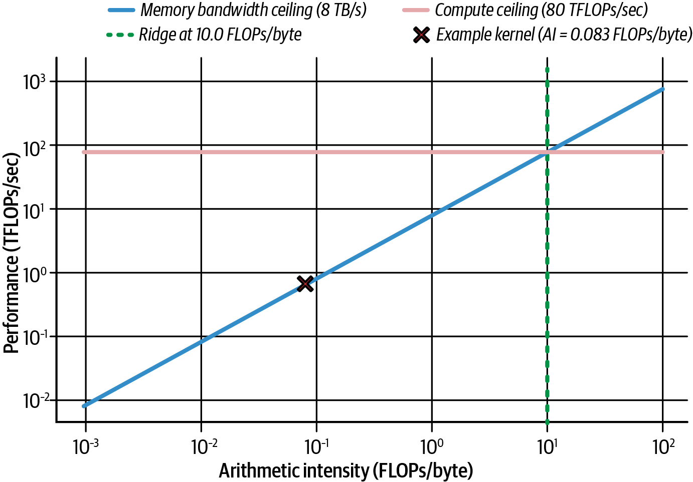
Figure 6-21. Roofline model for a Blackwell-class GPU (~80 TFLOPs/sec FP32, ~8 TB/s HBM3e) showing our kernel's point and the ~10 FLOPs/byte arithmetic intensity ridge
在这里，我们看到 Blackwell GPU 的脊点是持续 FLOPs/sec 除以持续 HBM 带宽。这里是图中显示的交点，在 10 FLOPs/byte。我们示例核函数的算术强度在 0.083 FLOPs/byte 的倾斜、内存带宽对角线左侧。因此，此核函数位于 roofline 的倾斜、内存带宽上限上。这确认它是内存密集型的。
Here, we see that the ridge point for a Blackwell GPU is sustained FLOPs/sec divided by sustained HBM bandwidth. Here it is the intersection shown in the figure, at 10 FLOPs/byte. Our example kernel's arithmetic intensity is on the left side of the sloping, memory-bandwidth diagonal at 0.083 FLOPs/byte. Therefore, this kernel sits on the sloping, memory-bandwidth ceiling of the roofline. This confirms it is memory bound.
要让这个核函数不那么访存受限（从而更偏向计算受限），你可以通过让每字节数据完成更多工作来提高它的算术强度。这会把该核函数向右移动，从而把性能向上推向计算屋顶线。
To make this kernel less memory bound (and thus more compute bound), you can increase its arithmetic intensity by doing more work per byte of data. This will move the kernel to the right, pushing performance toward the compute roofline.
让核函数不那么访存受限的一个简单办法，是使用更低精度的数据。例如，如果你用 16 位浮点数（FP16）代替 32 位（FP32），你就能把每次运算传输的字节数减半，并立刻把 FLOPs/byte 强度翻倍。
One simple way to make the kernel less memory bound is to use lower-precision data. For instance, if you used 16-bit floats (FP16) instead of 32-bit (FP32), you'd halve the bytes transferred per operation and instantly double the FLOPs/byte intensity.
现代 GPU 还支持专用的 8 位浮点（FP8）Tensor Core。Blackwell 还为某些 AI 工作负载引入了对 4 位浮点（FP4）Tensor Core 的原生支持。这些都进一步减少了每次运算的字节数，把 FLOPs/byte 强度提升得更多。
Modern GPUs also support dedicated 8-bit floating-point (FP8) Tensor Cores. Blackwell further introduces native support for 4-bit floating-point (FP4) Tensor Cores for certain AI workloads. This further reduces bytes per operation and increases FLOPs/byte intensity even more.
例如，Blackwell 支持 FP8 张量核心（每个值 1 字节），相对于 FP16，吞吐量翻倍，内存使用减半。它还支持某些工作负载（如模型推理）的 FP4（每个值半字节）。
For example, Blackwell supports FP8 Tensor Cores (1 byte per value), doubling throughput and halving memory usage relative to FP16. It also supports FP4 (nibble per value) for certain workloads like model inference.
单次 128 字节的内存事务可以承载 32 个 FP32、64 个 FP16、128 个 FP8 或 256 个 FP4 值。Blackwell 引入了硬件解压来加速压缩后的模型权重。例如，模型可以以压缩形式存储在 HBM 中（甚至压缩到超过 FP4 的程度），而硬件可以在读取时即时解压这些权重。这在读取这些权重时进一步有效提高了可用的内存带宽。
A single 128-byte memory transaction can carry 32 FP32, 64 FP16, 128 FP8, or 256 FP4 values. Blackwell introduces hardware decompression to accelerate compressed model weights. For example, models can be stored compressed in HBM, even beyond FP4 compression, and the hardware can decompress weights on the fly as they are loaded. This effectively further increases available memory bandwidth when reading these weights.
因此，Blackwell 对于基于 transformer 的 token 生成等内存密集型工作负载具有架构优势。权重以压缩的 4 位或 2 位方案存储，并在加载时由硬件解压缩并转换为 FP16/FP32 以进行更高精度的聚合和计算。这展示了更低精度如何减少传输的数据量、增加核函数的算术强度，并提高工作负载的整体内存吞吐量。
As a result, Blackwell has an architectural advantage for memory-bound workloads like transformer-based token generation. Weights are stored in compressed 4-bit or 2-bit schemes and decompressed on the fly by hardware when loaded, converting to FP16/FP32 for higher-precision aggregation and computation. This demonstrates how lower precision can reduce the amount of data transferred, increase a kernel's arithmetic intensity, and improve overall memory throughput for the workload.
对于内存密集型工作负载，目标是将核函数的操作点在 roofline 上向右推，以增加其算术强度并更接近成为计算密集型。通过更接近计算密集型状态，您的核函数可以更好地利用 GPU 的全部浮点算力。
For memory-bound workloads, the goal is to push the kernel's operating point to the right on the roofline to increase its arithmetic intensity and get closer to being compute bound. By getting closer to compute bound, your kernel can better utilize the GPU's full floating-point compute power.
基于 transformer 的模型（例如 LLM）在不同阶段既可能是计算受限的，也可能是访存受限的。例如，注意力层（prefill 阶段）通常是计算受限的，而矩阵乘法（解码阶段）往往是访存受限的。我们将在第 15–18 章深入探讨推理时对此展开更多讨论。
Transformer-based models (e.g., LLMs) can be both compute bound and memory bound in different phases. For example, attention layers (prefill phase) are typically compute bound, while matrix multiplications (decode phase) are often memory bound. We will discuss this more in Chapters 15-18 when we dive deep into inference.
当核函数是访存受限时，Nsight Compute 会报告非常高的 DRAM 带宽利用率，同时报告较低的实际算力指标，例如较低的 ALU 利用率。这表明 warp 把大部分时间都花在了因内存访问而停顿上。
When a kernel is memory bound, Nsight Compute will report very high DRAM bandwidth utilization alongside low achieved compute metrics such as low ALU utilization. This indicates that warps spend most of their time stalled on memory accesses.
要深入了解正在发生什么，最好使用 Nsight Compute 获取每核函数计数器，包括延迟、缓存命中率和 warp 发射停顿。此外，现代版本的 Nsight Compute 具有范围重放（带有指令级源指标）、改进的源关联导航和启动栈大小指标。这些功能有助于更快地诊断依赖停顿、寄存器压力和启动配置影响。
To dive deeper into what's happening, it's best to use Nsight Compute for per-kernel counters including latency, cache hit rates, and warp issue stalls. Additionally, modern versions of Nsight Compute feature range replay (with instruction-level source metrics), improved source correlation navigation, and launch stack size metrics. These features help diagnose dependency stalls, register pressure, and launch configuration impacts faster.
随后你可以用 Nsight Systems 获取一个整体的时间线视图，展示 GPU 空闲间隙、与 CPU 工作的重叠，以及 PCIe/NVLink 传输。二者结合能同时给你为何（是哪些停顿、哪些资源）和何时（这些停顿如何嵌入你应用的整体执行）。
Then you can use Nsight Systems for an overall timeline view showing GPU idle gaps, overlap with CPU work, and PCIe/NVLink transfers. Together they give you both the why (which stalls and which resources) and the when (how those stalls fit into the application's overall execution).
关键在于借助 Nsight Compute 和 Nsight Systems 两者的指标，迭代地进行剖析并识别内存热点。你应当在可疑代码周围添加 NVTX 区域，放大观察时间线行为，并利用反馈优化。
The key is to iteratively profile and identify memory hotspots using metrics from Nsight Compute and Nsight Systems. You should add NVTX ranges around suspicious code, zoom in on timeline behavior, and use the feedback to optimize.
例如，您可以使用 NVTX 将区域标记为"内存复制"或"核函数执行"，并在 Nsight Systems 时间线中看到它们。这对于确认主机-设备传输与计算的重叠非常有用，如前所述。
For example, you can use NVTX to label regions as "memory copy" or "kernel execution" and see them in the Nsight Systems timeline. This is useful for confirming overlap of host-device transfers with computation, as discussed earlier.
例如，要验证重叠，您可以使用 NVTX 标记标记数据传输和核函数调用的开始/结束。Nsight Systems 将在时间线上显示这些 NVTX 范围，使查看重叠变得容易。使用异步内存复制（cudaMemcpyAsync），数据传输与 GPU 上的核函数执行重叠（见图 6-22），比较同步和异步内存传输。
For example, to verify overlap, you can use NVTX markers to mark the start/end of data transfers and kernel calls. Nsight Systems will display these NVTX ranges on the timeline, making it easy to see the overlap. With asynchronous memory copies (cudaMemcpyAsync), data transfers overlap with kernel execution on the GPU (see Figure 6-22), comparing synchronous and asynchronous memory transfers.
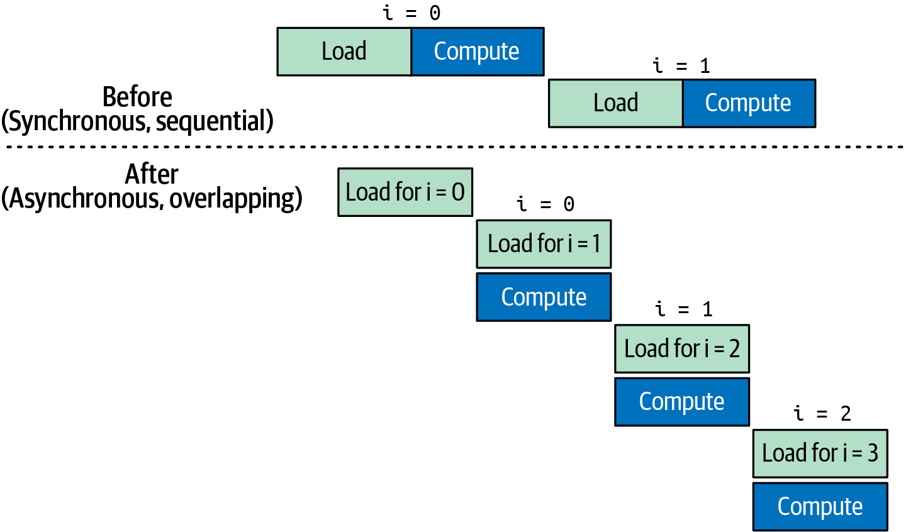
Figure 6-22. Synchronous (sequential) and asynchronous (overlapping) data transfers with kernel computations
如果你期望出现重叠，却看到拷贝和核函数是串行而非并行运行，那么问题多半类似于一次意外的默认流同步。否则，很可能是缺失了固定内存缓冲区，从而阻止了真正的重叠。
If you expect overlap but see the copies and kernels running sequentially versus parallel, then it's something like an unwanted default-stream synchronization. Otherwise, a missing pinned-memory buffer is likely preventing true overlap.
如果不使用固定（页锁定）内存，cudaMemcpyAsync 传输就无法与核函数执行相重叠。这是一个常见的性能问题。
Without using pinned (page-locked) memory, the cudaMemcpyAsync transfer cannot overlap with kernel execution. This is a common performance issue.
当您怀疑核函数数据饥饿时，首先在 Nsight Compute 和 Nsight Systems 下运行它。在 Nsight Compute 中，您将看到全局加载效率指标下降。这表明您的 DRAM 请求没有得到足够快的满足。同时，Nsight Systems 时间线将揭示核函数启动之间的空闲段，因为 GPU 等待数据传输。
When you suspect a kernel is data starved, first run it under Nsight Compute and Nsight Systems. In Nsight Compute, you'll see global load efficiency metrics drop. This indicates that your DRAM requests aren't being satisfied fast enough. Meanwhile, the Nsight Systems timeline will reveal idle segments between kernel launches as the GPU waits for data transfers.
一旦你应用了本章的内存层级优化，那些空闲间隙将几乎全部消失，而 Nsight Compute 会显示内存管线利用率百分比向峰值攀升。你还会看到端到端核函数吞吐相应地跃升。
Once you've applied the memory hierarchy optimizations from this chapter, those idle gaps will nearly disappear, and Nsight Compute will show memory pipeline utilization percentages climbing toward peak. You'll also see a corresponding jump in end-to-end kernel throughput.
每次更改后都要进行测量。分析工具将确认优化是否真正减少了内存停顿。
Always measure after each change. Profiling tools will confirm if an optimization actually reduces memory stalls or not.
6.14 关键要点 (Key Takeaways)¶
在本章中，你学习了如何选择能优化占用率的启动参数、如何异步管理 GPU 内存，以及如何应用 Roofline 分析来区分计算受限与访存受限的核函数。以下是一些值得回顾的关键要点：
In this chapter, you learned how to choose launch parameters that optimize occupancy, manage GPU memory asynchronously, and apply roofline analysis to distinguish compute-bound from memory-bound kernels. Here are some key takeaways worth reviewing:
GPU 在单指令多线程（SIMT）模型下以 warp（32 线程）为单位执行线程，每个 warp 以锁步方式发射指令。高占用率——即保持大量 warp 处于在飞状态——能隐藏内存和流水线延迟。
- SIMT Execution Model: GPUs execute threads in warps (32 threads) using a single-instruction, multiple-threads (SIMT) model, with each warp issuing instructions in lockstep. High occupancy-keeping many warps in flight-hides memory and pipeline latency.
- 线程层次结构：线程 → 块 → 网格：线程被组织成线程块（最多 1,024 个线程），线程块形成网格以在不更改代码的情况下扩展到数百万个线程。同步（
__syncthreads()或协作组）启用共享内存中的数据重用，但会产生开销，因此尽量减少屏障。
- Thread Hierarchy: Thread → Block → Grid: Threads are organized into thread blocks (up to 1,024 threads), and thread blocks form grids to scale to millions of threads without code changes. Synchronization (__syncthreads() or cooperative groups) enables data reuse in shared memory but incurs overhead, so minimize barriers.
- 占用率与资源限制：选择 32 倍数的块大小以避免未填满的 warp 并最大化调度器利用率。注意每 SM 限制。对于 Blackwell，每线程最大寄存器数为 255，每 SM 最大共享内存为 228 KB，最大驻留 warp 为 64，最大驻留线程块为 32。
- Occupancy vs. Resource Limits: Choose block sizes that are multiples of 32 to avoid underfilled warps and maximize scheduler utilization. Watch per-SM limits. For Blackwell, max registers per thread is 255, max shared memory per SM is 228 KB, max resident warps is 64, and max resident thread blocks is 32.
从 threadsPerBlock = 256（8 个 warp）开始，以兼顾占用率与资源使用；计算 blocksPerGrid = (N + threadsPerBlock – 1) / threadsPerBlock 以覆盖所有元素。根据剖析反馈（寄存器/寄存器溢出、共享内存用量、实际占用率）来调优这些数值。
- CUDA Kernel Launch Parameters: Start with threadsPerBlock = 256 (8 warps) to balance occupancy and resource usage; compute blocksPerGrid = (N + threadsPerBlock - 1) / threadsPerBlock to cover all elements. Adjust these values based on profiling feedback (registers/register spilling, shared-memory usage, achieved occupancy).
- 异步内存管理：优先在专用流上使用
cudaMallocAsync/cudaFreeAsync并利用 CUDA 内存池，避免全局同步和 OS 级开销。PyTorch 的缓存分配器遵循类似模式进行高效的张量分配，避免昂贵的cudaMalloc()和cudaFree()调用。
- Asynchronous Memory Management: Prefer cudaMallocAsync/cudaFreeAsync on dedicated streams and leverage CUDA memory pools to avoid global synchronization and OS-level overhead. PyTorch's caching allocator follows a similar pattern for efficient tensor allocation, avoiding expensive cudaMalloc() and cudaFree() calls.
Registers → L1/shared → L2 → global (HBM3e) → host：每一层都以容量换取延迟/带宽。要在寄存器以及共享内存/L1 缓存中最大化数据复用。
- GPU Memory Hierarchy: Registers → L1/Shared → L2 → Global (HBM3e) → Host: Each level trades off capacity for latency/bandwidth. Maximize data reuse in registers and shared/L1 cache.
CUDA 托管内存（统一内存）简化了编程，但可能引发隐式的页迁移；使用 cudaMemPrefetchAsync 和内存建议来避免意外的停顿。
- Unified Memory Considerations: CUDA managed memory (Unified Memory) simplifies programming but can cause implicit page migrations; use cudaMemPrefetchAsync and memory advice to avoid surprise stalls.
- Roofline 模型分析：算术强度（每字节 FLOPS）决定核函数是内存密集型还是计算密集型。使用更低精度（FP16/FP8/FP4 和硬件解压缩）提高 FLOPS/byte 比率，将核函数推向计算 roofline。使用 Nsight Compute（每核函数指标）和 Nsight Systems（时间线）进行分析，识别并消除内存停顿。在 Blackwell 上使用 TMEM 与统一矩阵乘累加（UMMA）结合 FP8 和 FP4 可以将核函数从内存密集型转变为计算密集型。我们将在第 10 章更详细地介绍 UMMA。
- Roofline Model Analysis: Arithmetic intensity (FLOPS per byte) determines whether a kernel is memory bound or compute bound. Use lower precision (FP16/FP8/FP4 and hardware decompression) to improve FLOPS/byte ratio and push kernels toward the compute roofline. Profile with Nsight Compute (per-kernel metrics) and Nsight Systems (timeline) to identify and eliminate memory stalls. Using TMEM on Blackwell with Unified Matrix Multiply Accumulate (UMMA) combined with FP8 and FP4 can transform kernels from memory bound to compute bound. We'll cover UMMA in more detail in Chapter 10.
6.15 结论 (Conclusion)¶
本章通过阐明 GPU 的 SIMT 模型、线程层次结构和多级内存系统，为高性能 CUDA 开发奠定了基础。请记住，占用率（活动 warp 与 GPU 理论最大值的比率）对于延迟隐藏很重要。
This chapter laid the foundation for high-performance CUDA development by illuminating the GPU's SIMT model, thread hierarchy, and multilevel memory system. Remember that occupancy (the ratio of active warps to the GPU's theoretical maximum) is important for latency hiding.
但是，最大化占用率并不保证每种情况下的最佳性能。如果线程有足够的指令级并行性（ILP）--或其他资源是瓶颈--GPU 通常可以在中等甚至低占用率下实现非常高的吞吐量。
However, maximizing occupancy doesn't guarantee the best performance in every case. If threads have sufficient instruction-level parallelism (ILP)-or other resources are the bottleneck-GPUs can often achieve very high throughput at moderate or even low occupancy.
虽然更高的占用率有助于隐藏延迟，但在某些情况下，减少活动线程数量将为其他线程释放寄存器。这允许每个线程进行更多计算--最终提高吞吐量。始终对不同占用率级别进行基准测试，为您的工作负载和硬件找到最佳设置。
While higher occupancy helps hide latency, in some cases, reducing the number of active threads will free up registers for other threads. This allows more computation per thread-and ultimately improves throughput. Always benchmark different occupancy levels to find the optimal setting for your workload and hardware.
掌握了这些基础知识和分析技术，您现在可以深入探讨针对性优化，如避免 warp 分支发散、利用 GPU 内存层次结构以及异步预取内存。我们还将深入探讨 TMA，它处理批量内存传输并释放 GPU 专注于有用的工作并增加计算吞吐量。
With these fundamentals and profiling techniques under your belt, you're now ready to dive into targeted optimizations like avoiding warp divergence, exploiting the GPU memory hierarchy, and asynchronously prefetching memory. We'll also dive deep into TMA, which handles bulk memory transfers and frees the GPU to focus on useful work and increase compute throughput.